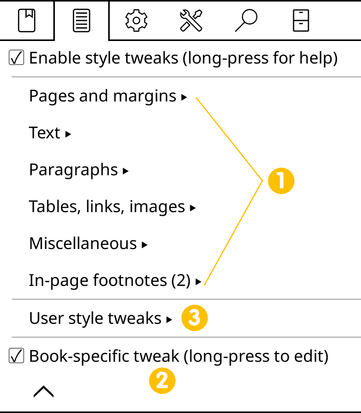
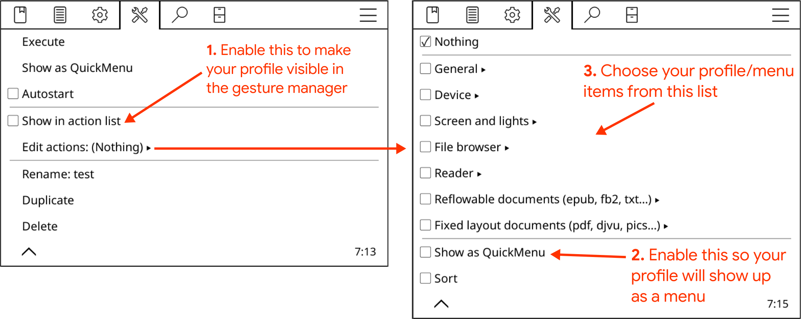

No momento, você está lendo a versão (principal) em português (Brasil) do Guia do usuário do KOReader. Também há voluntários traduzindo este guia para outros idiomas. Temos muitas traduções em andamento, como você pode ver no status geral da tradução abaixo. Mas nós apenas vinculamos aos idiomas que são traduzidos acima de 50% por razões de usabilidade.
Mais de 80% traduzido
Para ver todos os idiomas que estão sendo traduzidos atualmente e contribuir com os esforços de tradução do guia do usuário, visite a página de tradução do Weblate do nosso projeto.
Status geral da tradução do guia do usuário

Este guia foi projetado principalmente para telas coloridas. Se você estiver o usando pela primeira vez, recomendamos fortemente que você leia em um computador, tablet ou celular. Porque ver elementos da interface do usuário destacados em cores tornará sua vida mais fácil enquanto aprende a usar o KOReader. Claro que você também pode ler isso no seu dispositivo e-ink, mas a experiência não será ideal.
Você pode usar a função de busca do seu navegador para encontrar um tópico ou palavra-chave específica (geralmente Ctrl + F). Se você tiver uma sugestão ou pergunta relacionada a este guia do usuário, você pode escrever para este tópico de discussão do GitHub.
Partes do texto neste guia são codificadas por cor de acordo com suas categorias:
PARTES DO KOREADER (AZUL) |
Barra de status, Mapa do livro… |
CAMINHOS DO MENU (VERDE) |
MENU SUPERIOR /  / Estilo de destaque / Estilo de destaque |
APLICATIVOS EXTERNOS (ROXO) |
Calibre, Readwise, KoHighlights... |
Nós também temos diferentes caixas pelo guia para informar ou avisar você:
O KOReader é desenvolvido e sustentado por voluntários de todo o mundo. Você também pode ser parte deste projeto:
- Consertando falhas e implemetando novas funcionalidades
- Traduzindo o programa para a sua língua ou melhorando uma tradução existente
- Ajudando outras pessoas com seu conhecimento nos fóruns ou em questões e discussões do GitHub
Confira a seção Entre em contato conosco para obter os links.
Última atualização do guia: 2025-03-25
- O QUE VOCÊ PODE FAZER COM O KOREADER ?
- INFORMAÇÕES BÁSICAS DE USO
- APRENDENDO A INTERFACE DO USUÁRIO
- NAVEGANDO PELO SEU LIVRO
- PERSONALIZANDO A APARÊNCIA DO TEXTO
Apesar da aparência minimalista, o KOReader é um programa muito poderoso e customizável. Essa seção serve como um sumário com instruções passo a passo. Se você é um usuário novo, esse é o melhor lugar para começar. Aqui você pode ver o que o KOReader consegue fazer e aprender como seguindo estes  links para ir até as seções mencionadas.
- Modo de armazenamento USBpara dispositivos suportados 
- Armazenamento em nuvem (Dropbox/FTP/Webdav) com contas compatíveis 
- KOReader pode servir como um servidor SSH, para você poder usar um programa SFTP ou um gerenciador de arquivos para transferir arquivos diretamente
- Com o plugin do Calibre, você consegue enviar diretamente livros de sua biblioteca calibre para seus dispositivos com o KOReader utilizando wi-fi 
- Com o plugin de download de Notícias, você consegue baixar RSS e entradas de notícias Atom para seus dispositivos como arquivos HTML
- Com o plugin Wallabag, você consegue recuperar artigos de sua conta Wallabag (um serviço baseado em nuvem como o Pocket) 
- Alterar fontes (incluindo as suas), tamanho da fonte, contraste, negrito, kerning, espaçamento entre palavras, expansão de palavras, alinhamento do texto, espaçamento entre linhas, layout de colunas, margens... 
- Use poderosos style tweaksinclusos ou escreva seus próprios para mudar como seus livros são renderizados precisamente 
- Inverta as cores da tela com o modo noturno manualmente ou automaticamente
- Ajuste a temperatura da luz frontal do seu dispositivo automaticamente 
- Destaque textos com diferentes estilos e cores, coloque marcadores 
- Modo de dois-toques para destaques acadêmicos/mais longos 
- Adicione notas usando um teclado customizável, que inclui modificadores diacríticos 
- Faça capturas de tela 
- Acompanhe suas estatísticas de leitura, incluindo progresso de leitura, intervalos de tempo e calendários
- Exporte suas notas e destaques para seus dispositivos como texto, markdown, HTML, JSON ou formato Kindle
- Sincronize com serviços online como Joplin, Readwise, Memos, Flomo e XMNote 
- Um Explorador de Arquivos poderoso onde você pode copiar, mover, renomear, criar, deletar arquivos e pastas e realizar operações em massa
- Veja sua biblioteca como quiser com visualizações em muitos detalhes e em mosaico 
- Adicione seus livros aos seus Favoritos para acesso rápido ou crie suas próprias Coleções com ordenação e filtros 
- Navegação rápida para pular rapidamente entre páginas, capítulos e marcadores 
- Mapa do livro exclusivo para ver um mapa panorâmico do seu livro, incluindo todas as suas notas e destaques 
- Navegador de páginas para avançar nas páginas como uma linha do tempo 
- Navegador de Marcadores para navegar por seus destaques e notas facilmente 
- Crie um índice alternativo automaticamente ou manualmente se você não gosta do que vem com seu livro 
- Esconda e exclua certas partes do seu livro como Apêndice, Índice, Referências etc. para um contador de páginas mais exato 
- Um poderoso sistema de gestos com mais de 200 ações permite que você controle cada aspecto do KOReader com um toque ou deslizar 
- Se você tem um teclado (interno, com fio ou bluetooth) você também pode definir atalhos de teclado para essas ações 
- Ou crie seus próprios menus com suas ações favoritas com o Menu Rápido e acesse com um toque ou deslizar 
- Crie Perfis para controlar todos os aspectos do KOReader e automatizar ações 
- Pesquise o documento selecionando ou inserindo texto (incluindo expressões regulares)
- Pesquise suas marcações, destaques e notas
- Consulte texto na Wikipédia ou nos dicionários instalados e traduza com um toque longo
- Traduza páginas inteiras de uma só vez em mais de 130 idiomas
- Com nosso poderoso sistema de plugins, você pode até discutir o texto com o ChatGPT (após instalar o plugin) 
- O KOReader pode se atualizar 
- Diminua ou desligue a luz da tela depois de um intervalo definido
- Defina intervalos para atualização de página para diferentes condições de leitura 
- Defina seu próprio descanso de tela de várias opções como imagens aleatórias, capa do livro, leitura, progresso etc.
- Defina alarmes de limite de carga da bateria para evitar descarga profunda/sobrecarga 
- Defina um alarme de uso de memória (útil para dispositivos com menos memória) e opcionalmente reinicie o KOReader ao alcançar esse limite 
- Apare margens automaticamente ou manualmente
- Reorganiza o fluxo de texto em documentos para extrai-los e ler com mais facilidade em uma tela pequena
- Ative OCR para documentos sem camadas de texto, como livros antigos digitalizados 
- Diferentes tipos de zoom e direções de fluxo de página para ler facilmente documentos com várias colunas como artigos científicos 
- Endireitar automaticamente documentos inclinados, como livros antigos digitalizados 
- Salve seus destaques diretamente em PDFs, permitindo que você os veja sem o KOReader 
- Recurso especial: zoom de painel para leitura de mangás 
- Configurações de atualização de tela ajustáveis para balancear entre efeito fantasma e velocidade 
- Adicione seus própriosajustes de estilo CSS para livros 
- Sistema de patches de usuário que permitem que você mude os comportamentos principais do KOReader 
- Crie um código QR da sua área de transferência para compartilhar textos e links com outros dispositivos
- Veja a fonte HTML de um documento EPUB
- Crie e edite arquivos de texto no seu dispositivo
- Abra um emulador de terminal e execute comandos no seu dispositivo
- Veja suas estatísticas de uso de CPU, memória e bateria
O KOReader suporta arquivos PDF, EPUB, DJVU, MOBI, CBZ, CBT, DOCX, RTF, HTML, TXT, XPS, FB2, PDB, CHM e MD. Ele também pode abrir arquivos ZIP e exibir imagens.
Existem várias formas de transferir seus documentos para seu dispositivo. Note que talvez você precise reiniciar o KOReader para indexar os documentos transferidos (ou recarregar o diretório se você tem um Pocketbook/Android).
Além de transferir arquivos da mesma forma que faria com a aplicação de leitura embutida, outras opções estão disponíveis dependendo do seu dispositivo:
- Modo de armazenamento USB no KOReader: Esse modo está disponível para dispositivos KOBO e alguns CERVANTES.
- Armazenamento em nuvem(Dropbox/FTP/Webdav): Para usar essa função, você deve adicionar contas de um servidor de armazenamento em nuvem através do menu mostrado abaixo. O processo é explicado pelos botões info no menu enquanto adiciona as contas:
MENU SUPERIOR (no Explorador de Arquivos) /
 / Armazenamento em nuvem
/ Armazenamento em nuvem - Acesso SSH/SFTP: o KOReader pode agir como um servidor SSH, que você pode acessar com um computador para transferir arquivos (disponível em Kobo, Kindle, Cervantes). Você pode usar uma aplicação SFTP (como Filezilla) ou acessar através do seu gerenciador de arquivos se seu sistema operacional suporta. Veja nossa wiki para um passo a passo e verifique também a caixa de aviso abaixo.
- Transferência do Calibre: Com o plugin do Calibre você pode enviar documentos da sua Biblioteca Calibre diretamente para seus dispositivos KOReader através do wifi. Veja nossa wiki para um passo a passo.
- Baixador de notícias: Com esse plugin você pode baixar notícias de feeds RSS e Atom como arquivos HTML. Veja a wiki para um passo a passo.
- Wallabag: Com esse plugin, você pode buscar artigos do Wallabag, um serviço para ler mais tarde como o Pocket. Cheque a página da wiki para mais informações.
ATENÇÃO Tenha cuidado se decidir usar a função SSH sem uma senha, pois isso permite acesso ao seu dispositivo. Porém, se estiver usando uma conexão wifi local e ativar o wifi por um curto período, esse risco é mínimo.
Os seguintes métodos estão disponíveis para acessar seus livros:
- Explorador de Arquivos - A seção dedicada está aqui: Uso do Explorador de Arquivos
- Favoritos - Uma lista na qual você pode adicionar seus livros se pressionar e segurá-los no Explorador de Arquivos
- Histórico - Lista dos livros que você abriu
- Coleções - Listas de livros personalizadas que você criou. Seção dedicada aqui: Coleções
Você pode mudar a aparência dessas telas em:
 / Modo de Exibição
/ Modo de ExibiçãoSe quiser alterar quantos itens são visíveis nessas telas, olhe em:
/ Configurações / Configurações do mosaico e da lista detalhadaVocê pode escolher gestos para cada um desses diálogos. Por exemplo, enquanto estiver lendo um livro, você pode acessar seu Histórico ou seus Favoritos com um gesto e abrir outro livro sem ter que ir para o Explorador de Arquivos.
Você pode pesquisar um livro na tela do Histórico por nome do arquivo ou metadados do livro através do menu hambúrguer superior esquerdo.
Você também pode definir o KOReader para iniciar na tela de Favoritos ou Histórico ao invés do Explorador de Arquivos em:
/ Iniciar com
Na imagem acima, você pode ver as posições das zonas de toque padrão do KOReader. Para exibir o menu superior ou menu inferior você pode tocar nas zonas indicadas. Também pode deslizar para baixo a partir da área superior para mostrar o menu superior. Em dispositivos sem telas sensíveis ao toque como o Kindle 4 pode abrir o menu inferior ao pressionar o botão que corresponde a ação ENTER/OK..
Se você quiser abrir ambos os menus ao mesmo tempo, pode configurar a zona do menu superior para abrir simultaneamente o menu superior e o menu inferior através deste menu:
 / Toques e gestos / Ativar menu
/ Toques e gestos / Ativar menu
As zonas de toque nos cantos podem ser usadas para diferentes tipos de gestos incluindo TOQUE, TOQUE DUPLO, TOQUE COM DOIS DEDOS e TOQUE LONGO.
As zonas de PÁGINA ANTERIOR e PRÓXIMA PÁGINA também podem ser usadas para gestos de TOQUE DUPLO ao mesmo tempo.
A área da Barra de status pode ser tocada para alternar entre os itens da barra de status se apenas um deles estiver visível. Se todos os itens estiverem visíveis, tocar nela mostrará e ocultará a barra de status.
- Mudando a fonte*:MENU SUPERIOR / / Fonte
- Deixar a fonte maiorMENU INFERIOR /

- Deixar a fonte mais grossaMENU INFERIOR /

- Inverter as cores na tela (branco no preto)MENU SUPERIOR / / Modo noturno
Você também pode alterar para outras opções de formatação no MENU INFERIOR para refinar a aparência do seu texto. Estas são apenas dicas rápidas para você começar, é claro. Temos uma seção completa dedicada a PERSONALIZAÇÃO DE APARÊNCIA DO TEXTO
Você pode controlar a iluminação da sua tela através desse menu. Se você tem iluminação quente (luz branca normal + luz laranja) você pode controlá-la separadamenre através dessa janela. Você também pode definir um gesto pra esse diálogo:
/ Luz frontalVocê pode escolher a capa de um livro ou uma imagem personalizada como um protetor de tela através desse menu:
/ Tela / Protetor de telaVocê pode usar arquivos JPG/PNG como protetor de tela (imagens em escala de cinza com dithering apropriado ficam melhores). Transfira os arquivos do seu computador para qualquer pasta do seu dispositivo. Escolha essa pasta como sua pasta de protetores de tela através desse menu:
/ Tela / Protetor de Tela / ConfiguraçõesPor favor, consulte essa postagem no fórum Mobileread para informações avançadas sobre o preparo de imagens de Proteção de Tela.
Se você estiver procurando por informações de atalhos de teclado, clique aqui para ir para essa seção. Essa área só explica o uso do teclado.
- Toque fora da área de entrada de texto para fechar o teclado, toque na área de entrada de texto para mostrar o teclado de novo
- Deslize as teclas para cima para inserir a versão maiúscula da letra (ou minúscula se você já estiver no modo shift)
- Você pode mudar a aparência do teclado:
MENU SUPERIOR / / Dispositivo / Teclado / Configurações do Teclado
- Você pode selecionar mais de uma disposição:
MENU SUPERIOR / / Dispositivo / Teclado / Disposição do Teclado
- Você pode alternar entre as disposições selecionadas ao tocar no
 ícone no teclado
ícone no teclado
O teclado do Koreader permite que você digite caracteres extras quando tocar e segurar uma tecla. Os caracteres extras mais usados são mostrados abaixo. Você pode tocar e segurar a tecla na caixa cinza pra ver os caracteres ao redor:

Além do popup de toque longo, você também pode inserir esses caracteres extras deslizando o dedo sobre uma tecla. No exemplo abaixo, você pode deslizar para cima sobre a tecla a para inserir um A maiúsculo ou deslizar em outras direções para inserir os caracteres mostrados. Observe que o exemplo mostrado inclui o popup completo para demonstração. Você não precisa abrir esse popup, pode deslizar diretamente nas teclas. Após se acostumar com a localização dos caracteres extras, você poderá inseri-los muito mais rapidamente desta maneira.

Se essa funcionalidade interferir com o seu uso, você pode desativá-la desmarcando:
/ Dispositivo / Teclado / Deslizar para inserir caracteres adicionaisAdicionalmente, há alguns atalhos para facilitar a manipulação de texto. Você pode tocar e segurar essas teclas para ações extras:
- Seta para esquerda - Move o cursor para o início da linha
- Seta para direita - Move o cursor para o final da linha
Além disso, a tecla backspace (apagar) se comporta diferentemente quando você usa gestos nela:
- Tocar: Deleta um caractere
- Toque longo: Deleta a linha toda
- Deslizar para a esquerda: Deleta parte da palavra à esquerda do cursor
- Deslizar para cima: Deleta a palavra inteira
Para mais informações, confira a página da wiki relacionada.
KOReader também integra um teclado de traços Chinês para inserir caracteres do chinês simplificado e tradicional. Você pode conferir mais informações na wiki.
Esse plugin permite que você ajuste a temperatura da luz frontal em dispositivos com luz natural (amarelo/laranja) e selecionar o modo noturno (cores da tela invertidas – texto branco no fundo preto) automaticamente de acordo com o horário. Ele pode controlar ambos ou você pode escolher apenas controle de temperatura ou apenas modo escuro para que você possa ajustar o outro manualmente.
Esse plugin vêm ativado por padrão quando você instala o KOReader. Se por algum motivo ele não estiver no menu, você pode ativá-lo aqui:
/ Mais ferramentas / Ajuste Automático de Temperatura (Luz) e Modo NoturnoVocê pode ajustar a temperatura da luz da sua tela automaticamente de duas formas:
Agendamento fixo: Nesse modo, a temperatura da tela muda de acordo com os horários que você adicionar. Esse modo é estático, e não leva em consideração a duração da luz do dia. A programação permanece a mesma durante todo o ano.
Posição do Sol: Esta opção calcula a posição do Sol em sua localização de acordo com as informações de coordenadas e altitude inseridas. A temperatura da luz frontal é ajustada gradualmente de acordo com esses dados calculados da posição do Sol. Este modo é dinâmico. À medida que a duração do dia muda ao longo do ano, o plugin ajusta a programação de acordo.
Primeiro, dê uma olhada nesta imagem para se familiarizar com os termos usados no plugin:

- Vá para o menu do plugin: MENU SUPERIOR / / Tela / Temperatura de cor e modo noturno automáticos
- Toque em Ativar item de menu e depois toque em De acordo com o horário fixo
- Volte ao menu anterior e toque Configurações de horário fixo item do menu
- Defina seu agendamento de transição de intensidade de luz definindo horários para vários itens aqui. Consulte a imagem acima para obter uma explicação dos itens.
- Vá para o menu do plugin:
MENU SUPERIOR / / Tela / Temperatura de cor e modo noturno automáticos
- Toque Ativar item do menu e depoisDe acordo com a posição do Sol
- Volte ao menu anterior e toque Configurações de localizaçãoitem do menu. Defina suas coordenadas (necessário) e altitude (opcional) corretamente e dê um nome à sua localização.
- Volte ao menu anterior e toqueConfigurações de temperatura de luz e modo noturno item do menu
- Defina seu agendamento de transição de intensidade de luz definindo horários para vários itens aqui. Consulte a imagem acima para obter uma explicação dos itens.
Você pode ver sua programação atual via Parâmetros ativos no momento opção do menu.

Ao definir as porcentagens de luz quente para diferentes intervalos, você também pode definir esse intervalo para o Modo Noturno, que inverte as cores da tela quando esse intervalo começa. Se a sua luz frontal mínima ainda estiver muito forte ou se você preferir um fundo de tela escuro, você pode ativar esse recurso. Para habilitar isso, na caixa de diálogo abaixo, toque na caixa de seleção Modo Noturno e toque em Definir.
Ao fazer isso, um ícone de lua aparecerá no menu ao lado deste intervalo. Para desativar o modo noturno, basta desmarcar a caixa de seleção Modo noturno nesse intervalo.

Este recurso liga a luz frontal ao pôr do sol e a desliga ao nascer do sol, de acordo com os seus Parâmetros ativos no momento neste plugin. Você pode substituir essa alteração ligando/desligando manualmente a luz frontal. No próximo nascer/pôr do sol, o Ajuste Automático da Temperatura (Luz) a ativará novamente, se necessário. Você pode ativá-lo selecionando o item de menu Luz frontal desligada durante o dia neste plugin.
Se você deseja que a sua temperatura de luz frontal mude mais rapidamente ao invés de mais gradualmente:
- Defina o modo como Horário fixo seguindo as instruções acima
- E ajuste as configurações de acordo com a imagem abaixo:

Como você pode ver nas configurações acima, há apenas um minuto de diferença entre a transição dia-noite. Portanto, a temperatura de luz da tela vai de 0 a 100 (ou vice-versa) em apenas um minuto. Você pode aumentar esse intervalo de tempo para prolongar a duração da transição.
O KOReader tem uma interface de usuário simples, majoritariamente em preto e branco, porque gradientes e diferentes tons de cinza podem causar flashes e efeito fantasma em telas e-ink, o que pode prejudicar a experiência de leitura.
O KOReader possui 2 interfaces principais: tela de leitura e explorador de arquivos. Explicaremos a tela de leitura aqui. O Explorador de arquivos é explicado nesta seção do guia.
TELA DE LEITURA possui dois menus:
- MENU SUPERIOR inclui itens relacionados ao uso geral do KOReader. Aqui você acessará seus livros, preferências do KOReader, plugins, etc.
- O MENU INFERIOR concentra-se em opções de formatação de documentos, como espessura/tamanho da fonte, espaçamento entre linhas, etc. Ao ajustar a aparência do texto, você irá interagir principalmente com o MENU INFERIOR.

A imagem acima mostra os elementos que você pode ver na tela do seu leitor ao ler um livro:
- Ícones indicadores: Estes ícones informam sobre determinados processos e estados em andamento. Você os verá no canto superior esquerdo da tela durante determinadas operações. Normalmente, eles são menores, mas aqui os mostramos maiores para maior clareza. O próximo título explica esses ícones indicadores em detalhes: Ícones indicadores
- Barra de status:Esta é uma área altamente configurável onde você pode ver diversas informações sobre seu livro e o KOReader. Clique aqui para acessar a seção: Clique aqui para mais detalhes: Barra de status
- Barra de status alternativa: Além da Barra de status padrão, temos uma Barra de status alternativa que aparece no topo da página se você ativá-la. Clique aqui para mais detalhes: Barra de status
- Números de páginas de referência: Se a editora do seu livro incluiu os números de páginas da versão impressa do livro, você os verá assim. Clique aqui para mais informações: Numeração de páginas e números de páginas de referência
- Tipos de destaque: Você pode ver os diferentes tipos de destaque aqui. Você também pode fazer destaques coloridos se o seu dispositivo tiver uma tela adequada. Clique aqui para acessar a seção: Marcadores, Destaques e Notas
- Marcador de nota: O ícone de marcador de nota aparece quando você adiciona uma nota a um destaque. Temos diferentes tipos de marcadores de nota. Clique aqui para mais informações: Marcadores, Destaques e Notas
O KOReader possui alguns indicadores para informá-lo sobre determinados processos e estados em andamento, como você pode ver na imagem acima. Você os verá no canto superior esquerdo da tela durante determinadas operações.
   
|
Ícones de renderização parcial Este grupo de ícones pertence ao procedimento de renderização parcial e provavelmente você os verá com mais frequência do que os outros. Você os verá ao alterar as configurações no menu inferior. Este recurso permite que você pré-visualize os ajustes na aparência do texto muito mais rapidamente, renderizando apenas o capítulo atual em vez do livro inteiro. Além disso, a rotação da orientação da tela agora é muito mais rápida graças a este recurso. Este recurso está ATIVADO por padrão. Se necessário, ele pode ser desativado por livro (com um toque) ou globalmente (com um toque longo) em: MENU SUPERIOR /
/ Documento / Habilitar renderizações parciaisApós confirmar as alterações, todo o livro precisa ser renderizado novamente, portanto, este é um procedimento de várias etapas. Estes ícones mostram o estágio da renderização, conforme explicado abaixo: |
|
Nesta fase, o documento é parcialmente renderizado. A contagem de páginas, as informações de rodapé e muitos outros itens estão imprecisos. Você pode ver a aparência das novas configurações e fazer ajustes adicionais. Você também pode virar páginas e pular links neste estado. |
|
Uma renderização completa está acontecendo em segundo plano. Você ainda pode virar páginas, acessar links e alterar configurações. |
|
A renderização completa foi concluída, mas ainda não foi aplicada porque o KOReader está esperando que você fique ocioso para recarregar o restante do livro (ocioso = sem interagir com o dispositivo). Você ainda pode virar páginas, pular links e alterar configurações. |
|
|
Você ficou inativo por um tempo, então o KOReader está recarregando o documento inteiro. Nesta etapa, o KOReader está bloqueado para impedir a interação. |
 |
Ícone de destaque Este ícone aparece quando você está no Modo Selecionar e Destacar. O KOReader tem um modo de destaque adicional que permite iniciar um destaque e virar as páginas para fazer destaques longos que podem abranger várias páginas. Você pode ler sobre isso na seção MARCADORES, DESTAQUES E NOTAS deste guia. Ao iniciar um destaque neste modo, este ícone é exibido no canto para lembrá-lo de que você ainda está no modo de destaque. Ele desaparece quando você termina o destaque selecionando o final do trecho ou quando você cancela o destaque (tocando novamente no início do destaque ou neste ícone de destaque). |
 |
Ícone de Poké Ball Este ícone aparece quando você pressiona uma palavra por um longo tempo (intencionalmente ou acidentalmente). O KOReader tem um menu normal de pressionamento longo. E um menu adicional de pressionamento muito longo quando você segura o dedo por mais de 3 segundos. Este ícone significa que você ativou este menu de pressionamento muito longo. |
 |
Ícone do modo folhear páginas Este ícone aparece quando você toca no canto superior esquerdo se:
Este modo exibe temporariamente a página inteira sem cortes, dimensionada para caber na tela. Você pode virar as páginas neste modo. Para sair deste modo, toque neste ícone. |
Tipos de documentos como epub, mobi, html naturalmente não têm números de página fixos, pois são documentos refluíveis. Isso significa que esses documentos podem ser ajustados de acordo com o tamanho da tela e a orientação do dispositivo (ao contrário de arquivos pdfs ou djvu, por exemplo, que têm um tamanho de página fixo).
Se você aumentar o tamanho da fonte de um documento digitalmente otimizado, o número de páginas também aumentará, pois menos texto caberá em uma única página. Isso às vezes causa um problema, pois um destaque feito na página 38 pode aparecer na página 42 após o ajuste da fonte.
O KOReader suporta o recurso Números de página de referência, que permite que as editoras incorporem números de página de livros impressos diretamente na versão e-book. Ao ativar esse recurso, o KOReader não calcula os números de página sozinho. Em vez disso, ele mostra os números de página incorporados da editora. Isso significa que o número da página que você vê na Barra de status corresponde à versão impressa do livro.
Benefícios dos números de páginas de referência:
- Os números das páginas de referência permitem citações precisas ao corresponder aos números das páginas encontrados nas versões impressas.
- Os números de referência das páginas podem auxiliar na navegação, especialmente para leitores familiarizados com a versão impressa do livro. Podem ajudar a encontrar passagens ou citações específicas com mais facilidade na versão digital.
- Como os livros digitais podem ser lidos em diversos dispositivos e plataformas, cada um com seu próprio tamanho de fonte e configurações de exibição, a numeração das páginas exibida pode variar significativamente. A numeração das páginas de referência fornece um ponto de referência consistente ao ler o mesmo livro em diferentes dispositivos, como leitores eletrônicos e celulares, ao mesmo tempo.
Você pode habilitar esse recurso em:
 / Páginas de referência / Usar números de página de referência
/ Páginas de referência / Usar números de página de referênciaSe você também marcar a opção Mostrar rótulos de página de referência na margem no mesmo menu, os números de página serão exibidos ao lado do texto em uma fonte pequena.
Observe que este menu só aparece se houver Números de páginas de referência incorporados no seu livro.
O KOReader tem duas barras de status: uma Barra de status inferior, que é habilitada por padrão. E uma Barra de status alternativa, que aparece no topo da página se você ativá-la. Esta Barra de status alternativa está disponível apenas em documentos refluíveis (epub, html, docx, rtf, txt…).
A Barra de status inferior é a mais recente e está sendo ativamente atualizada. A Barra de status alternativa é um resquício de versões anteriores do KOReader e, portanto, não estamos adicionando novos recursos a ela. Mas você ainda pode habilitar esta Barra de status alternativa se achar útil. Você pode habilitá-la em:
/ Barra de Status AlternativaVocê pode configurar a Barra de status alternativa neste menu:
/ Barra de Status / Barra de Status AlternativaAs instruções no restante desta seção são para a Barra de status inferior.
Você pode configurar a barra de status inferior neste menu. Sinta-se à vontade para explorar o submenu CONFIGURAÇÕES para personalizar sua barra de status como desejar.
/ Barra de StatusHá muitos itens que você pode exibir na barra de status. Mas, por padrão, apenas um item é exibido por vez e você precisa tocar na barra de status para alternar entre eles. Se quiser exibir todos os itens de uma vez, ative esta opção aqui:
/ Barra de Status / Configurar itens / Mostrar todos os itens selecionados de uma vezSe você habilitou a opção acima, não será possível ocultar a barra de status tocando nela. Se quiser ocultá-la, defina um gesto aqui para alternar a barra de status:
Ordenando os itens da barra de status:
/ Barra de Status / Configurar itens / Organizar itens na barra de statusHá um item especial na barra de status chamado Texto personalizado. Este item pode exibir o texto escolhido na barra de status. Você também pode usar este recurso para criar um separador entre os itens da barra de status, como pode ser visto no exemplo abaixo:

- Primeiro habilite esta opção com um toque curto neste menu
MENU SUPERIOR / / Barra de Status / Texto personalizado: ‘KOReader’
- Em seguida, pressione e segure novamente para abrir as configurações. Digite um caractere "espaço" na primeira caixa e insira o número de repetições na segunda caixa, que determinará a largura do separador.
Você pode escolher outro caractere como separador. Você também pode mover este item como outros itens da barra de status para alterar sua ordem e ajustar seus grupos.
A Barra de progresso na barra de status normalmente mostra seu progresso em todo o livro. Mas também pode mostrar seu progresso no capítulo atual. Isso pode ser útil, por exemplo, se um livro tiver muitos capítulos curtos. Nesse caso, pode ser difícil ver seu progresso no capítulo atual, então a barra de status do capítulo pode ser mais informativa aqui. Você pode ativar o recurso neste menu:
/ Barra de Status / Barra de Progresso / Mostrar barra de progresso do capítuloVocê também pode atribuir um gesto para alternar entre as barras de progresso normal e de capítulo. Você pode encontrar essa ação em:
Aqui, forneceremos apenas uma visão geral dos itens na estrutura do menu superior para que você se familiarize com o menu. Informações detalhadas estão disponíveis nas seções relacionadas deste guia.

- NAVEGAÇÃO: Este menu contém itens que permitem navegar pelo livro que você está lendo no momento. Índice, marcadores, mapa do livro...
- FORMATAÇÃO: Este menu contém itens que permitem alterar a aparência do seu livro. Configurações de fonte, ajustes de estilo...
- CONFIGURAÇÕES: Este menu contém configurações para o KOReader e seu dispositivo. Configurações da tela e-ink, luz, gestos...
- FERRAMENTAS: Este menu contém plugins que podem expandir a funcionalidade do KOReader.
 PESQUISA: Este menu contém itens relacionados à pesquisa e consulta. Pesquisa de texto, dicionário, tradução, Wikipédia...
PESQUISA: Este menu contém itens relacionados à pesquisa e consulta. Pesquisa de texto, dicionário, tradução, Wikipédia...- EXPLORADOR DE ARQUIVOS: Este botão abre o explorador de arquivos, que é a interface para gerenciar a sua biblioteca.
 PRINCIPAL: Este menu contém ferramentas para acessar seus livros, como histórico, favoritos e coleções. Também estão disponíveis itens como informações do livro, atualização e sair.
PRINCIPAL: Este menu contém ferramentas para acessar seus livros, como histórico, favoritos e coleções. Também estão disponíveis itens como informações do livro, atualização e sair.

Modo de visualização: Se você mudar para o modo contínuo, poderá rolar o documento como uma página da web. Este modo é mais adequado para telas que não são e-ink (LCD, OLED). No modo contínuo, você perde as margens superior e inferior, então o texto pode ser cortado na primeira e na última linha da tela. Para resolver esse problema, você pode ativar a Sobreposição de páginas:
/ Sobreposição de PáginasModo de renderização: Esta opção determina como o seu documento será renderizado pelo KOReader. O padrão é WEB e geralmente não é necessário alterar esta configuração. Quando um livro (ou página da web salva) é muito complexo (larguras ou margens especificadas, margens negativas, flutuações, etc.) e o layout parece ruim ou ultrapassa a tela, você pode tentar outros modos de renderização.
Zoom (dpi): Esta configuração pode ser considerada como um fator de zoom geral para o documento (exceto o tamanho da fonte). A 96 dpi (que é a configuração padrão), as imagens no documento são renderizadas em suas dimensões originais. Basicamente, você usará esta configuração se quiser aumentar as imagens sem aumentar o tamanho do texto.

As configurações de Espaçamento entre palavras e Expansão de palavras estão relacionadas e determinam a aparência do seu texto quando justificado. Ao justificar o texto, um espaço é adicionado entre as palavras para que ambas as bordas de cada linha fiquem alinhadas com ambas as margens. Como a contagem de palavras das linhas não é sempre igual, no alinhamento justificado, o texto precisa ser comprimido ou expandido para preencher a linha.
Espaçamento entre palavras: O quanto o espaço dos caracteres em uma linha de texto podem ser comprimidos para acomodar mais palavras. Esta configuração não afeta as palavras, apenas altera o espaço entre elas.
Expansão de palavras: Se houver muito espaço em branco em uma linha, determine quanto desse espaço pode ser distribuído entre as palavras expandindo-as. Esta configuração afeta a aparência das palavras. Se não quiser que suas palavras se expandam, defina como nenhum.
Você pode experimentar diferentes configurações até que o texto pareça agradável para você e, então, defini-las como padrões por meio de suas respectivas caixas de diálogo.

Contraste e Espessura da fonte são duas opções que você pode usar para deixar seu texto mais espesso (ou mais fino). Você pode obter a mesma aparência com qualquer uma dessas opções, mas elas usam métodos diferentes para isso. É claro que você pode usar as duas ao mesmo tempo.
As diferenças entre eles podem ser resumidas como:
+ Não altera a largura da fonte, o tamanho do livro permanece o mesmo
+ Não precisa renderizar novamente o documento, mais rápido
- Pode parecer ruim em telas LCD ou de baixo DPI
+ Usará fontes com espessura apropriada se você as tiver instaladas
+ Fica com melhor aspecto em telas LCD ou de baixo DPI
- Tem que renderizar novamente as fontes, mais lento
Hinting da fonte ajusta seu texto para máxima legibilidade de acordo com a grade de pixels da sua tela. nativo usa as instruções de hinting internas da fonte, enquanto auto utiliza o algoritmo de hinting do FreeType. Auto é uma escolha mais segura, pois fontes que você instalou podem ter instruções de hinting problemáticas. Além disso, auto lida melhor com textos em CJK. Você pode testar diferentes configurações para ver qual fica melhor no seu dispositivo.
Kerning da fonte ajusta o espaçamento entre letras para um resultado visualmente agradável. A opção padrão é ótimo, que pode ser mais lenta ao abrir arquivos (dependendo do seu dispositivo), mas oferece melhor suporte a ligaduras (veja a imagem abaixo como exemplo), glifos árabes conectados e alguns outros scripts. Se seu dispositivo for lento, você pode tentar bom, que é mais rápida e ainda pode parecer correta em textos ocidentais em alfabeto latino.


A Barra de status alternativa ativa uma barra de status alternativa, disponível apenas em documentos refluíveis (EPUB, HTML, DOCX, RTF, TXT…). Após ativá-la aqui, você pode configurar a barra de status alternativa por meio de:
/ Barra de Status / Barra de Status AlternativaEstilo incorporado e fontes incorporadas determinam se os estilos e fontes do editor incorporados no documento serão usados (ou ignorados) para renderizá-lo. Essas são opções gerais de ligar/desligar. Você pode fazer ajustes mais precisos no seu documento por meio de:
/ Ajustes de EstiloO Dimensionamento da imagem determina como as imagens no seu documento são renderizadas. Melhor parece mais agradável, mas é mais lento.
A interface de usuário e as opções do KOReader podem mudar dependendo do tipo de arquivo aberto. Há duas categorias principais de documentos:
- Documentos de layout fixo (pdf, djvu, arquivos de imagem...)
- Documentos refluíveis (epub, html, docx, rtf, txt…).
O KOReader possui muitos recursos, então seu sistema de menus reflete essa complexidade. Temos um recurso de Busca de Menu para encontrar itens de menu rapidamente. Se você se lembra do nome de um item de menu, mas não sabe onde ele está, pode usar este recurso:
/ Ajuda / Pesquisa de menuVocê também pode atribuir esse recurso a um gesto ou adicioná-lo ao seu Menu Rápido para acesso mais rápido.
No menu inferior, se você tocar e segurar o nome de uma opção, poderá ver sua explicação. |
|
Você pode alterar o idioma da interface via: MENU SUPERIOR /
/ Idioma |
|
Se você quiser alterar o tamanho da interface do usuário, há uma configuração de DPI para isso: MENU SUPERIOR /
/ Tela / DPI da telaVocê pode escolher um valor no menu ou selecionar DPI personalizado para inserir um valor para ajuste fino: DPI maior = Interface maior. Observe que também há uma configuração de Zoom (dpi) na barra inferior. Esta configuração está relacionada apenas aos documentos. Você encontrará a explicação na próxima seção. |
Se você tocar e segurar uma opção ou item de menu (espessura da fonte, espaçamento entre linhas, etc.), você poderá definir seu valor como PADRÃO. O novo valor será aplicado apenas aos livros abertos a partir de agora. Os livros abertos anteriormente manterão suas configurações. Você pode identificar os valores padrão com uma estrela (★) no menu ou com uma borda preta ao redor dos indicadores, como mostrado abaixo: 

|
Você pode fechar caixas de diálogo em tela cheia (Histórico, Índice, Estatísticas de Leitura etc.) deslizando para baixo. (Exceto a janela Marcadores. Você pode usar qualquer gesto de deslizar múltiplo para fechar esta) |
Você pode tirar uma captura de tela fazendo um deslize diagonal longo com o dedo. Além disso, tocar nos cantos diagonais opostos também tira uma captura de tela. Você pode usar este segundo gesto, por exemplo, ao visualizar uma imagem. Também, se o seu dispositivo tiver teclado, é possível tirar uma captura de tela com o atalho Alt + Shift + G. |
Se você quiser abrir uma página aleatória de um livro, temos a ação Ir para uma página aleatória que você pode atribuir a qualquer gesto. Ela está na categoria Leitor do Gerenciador de Gestos. |

Em caixas de diálogo contendo botões de seta de ajuste como o acima, você pode tocar e segurar nos botões de seta para alterar o valor em incrementos maiores. Você pode fechar este tipo de diálogo (não em tela cheia) tocando fora da janela. Você pode mover esse tipo de caixa de diálogo segurando o título da janela e arrastando. Você pode tornar esse tipo de diálogo semitransparente tocando e segurando o título da janela (quando quiser ver o texto abaixo dela enquanto ajusta um valor). |
Criando novas pastas - Em situações em que você precisa escolher um local (armazenamento em nuvem, plugin para mover para arquivo, plugin exportador), o KOReader apresenta uma tela semelhante ao nosso Explorador de Arquivos. Se você quiser criar uma nova pasta enquanto escolhe:
|
O KOReader suporta pesquisa de dicionário em documentos EPUB e PDF/DJVU digitalizados. Para ver a definição ou tradução do dicionário, basta tocar e segurar uma palavra. Pressionar e segurar uma palavra abre uma caixa de diálogo onde você também pode pesquisar a seleção no documento para mais ocorrências ou procurá-la na Wikipédia. |
Se quiser verificar a data atual, toque no relógio no MENU SUPERIOR. |
O KOReader possui três tipos de rolagem por toque. Você pode acessá-los em:
/ Toques e Gestos / Rolagem- Rolagem clássica: Este modo funciona exatamente como a rolagem do seu telefone/tablet.
- Rolagem turbo: Este modo permite que você role mais rápido do que a rolagem clássica. Além disso, você pode rolar várias páginas sem levantar o dedo. A quantidade de rolagem é proporcional à distância que você move o dedo após iniciar a rolagem.
- Rolagem ao soltar: Este tipo de rolagem é mais adequado para telas e-ink. Porque, ao contrário de outros tipos de rolagem, este modo não atualiza a página continuamente durante a rolagem. Funciona como a rolagem clássica, mas as etapas intermediárias não são mostradas. Assim, quando você rola com o dedo e solta, a página salta para essa posição. Isso é especialmente útil para reposicionar e ajustar a visualização se o seu livro contiver imagens ou tabelas e você quiser ver tudo.
Este recurso útil funciona como o botão Voltar do seu navegador. Quando você pula para outra parte do livro usando o Navegação rápida, Lista de marcadores, Mapa do livro etc., o KOReader lembra a sua localização anterior. Isso é útil, por exemplo, se você seguir um link ou referência interna. Com um toque, você pode voltar para onde veio. Você pode acessar este recurso em:
/ Voltar para a localização anteriorVocê também pode avançar pelo mesmo menu. Este recurso é atribuído ao  gesto de múltiplos deslizes. Você pode atribuí-lo a outro gesto se desejar (como tocar em um canto) ou adicioná-lo ao seu Menu Rápido.
O KOReader normalmente realiza uma atualização completa em páginas que contêm imagens (que você pode observar como um flash preto). O motivo é se livrar dos resíduos e do efeito fantasma da página anterior. Mas isso pode não ser necessário dependendo do seu dispositivo e preferências pessoais. Você pode desativar esse comportamento de atualização automática aqui:
/ Tela / Configurações da tela e-ink / Taxa de atualização total / Sempre atualizar a tela em páginas com imagensSe a atualização (piscar) da interface te incomodar, você também pode desativá-lo aqui:
/ Tela / Configurações da tela e-inkExistem diferentes maneiras de navegar pelo seu documento no KOReader, cada uma com seus benefícios. Você pode usar:
- Navegação Rápida
- Mapa do livro
- Navegador de página
O Navegação Rápida é uma ferramenta de navegação muito funcional. Você pode usá-lo para:
- Ir para qualquer parte do seu livro tocando diretamente na barra de progresso ou inserindo o número da página
- Navegar entre capítulos
- Navegar entre marcadores
Como abrir a Navegação Rápida:
- Com um toque longo na área da Barra de status na parte inferior da sua tela
- Deste menu: MENU SUPERIOR / / Folhear documento
- Você pode atribuir um gesto a ele
- Você pode adicioná-lo ao seu Menu Rápido
Primeiro, vamos dar uma olhada rápida no diagrama abaixo. Você verá que temos dois modos de Navegação Rápida diferentes. Eles têm as mesmas funções, apenas o tamanho é diferente:
- WIDGET DE NAVEGAÇÃO RÁPIDA EM TAMANHO COMPLETO: Este é o widget de navegação rápida padrão que você verá ao instalar o KOReader. Ele é maior que o widget de navegação rápida compacto, então os botões são mais confortáveis de pressionar. Este widget abre no centro da tela.
- WIDGET DE NAVEGAÇÃO RÁPIDA COMPACTO: Esta é uma versão menor que o widget de navegação rápida padrão. Pode ser mais útil se você estiver fazendo destaques, por exemplo. Como este widget é menor e abre na parte superior ou inferior da tela, ele não obstrui a página tanto quanto o widget padrão.
Se você quiser usar o widget de navegação rápida compacto, você pode fazer isso escolhendo Superior ou Inferior neste menu:
/ Navegação / Posição do diálogo de folhear:DICA Ambos os widgets de navegação rápida são móveis. Você pode movê-los pressionando uma área vazia do widget e arrastando. Você também pode tornar essas caixas de diálogo semitransparentes pressionando longamente uma área vazia do widget. Mas a semitransparência é acionada apenas em sua posição inicial. Uma vez movido, pressionar longamente o widget o move de volta para a posição inicial.
Voltando ao diagrama, você pode ver que em alguns botões há duas descrições em cores diferentes: azul e laranja. Isso significa que este botão tem duas funções: uma ação de toque normal e uma ação de toque longo. Se você pressionar normalmente, ele executará a função AZUL. Se você pressionar por mais tempo, ele executará a função LARANJA.

Explicações dos itens numerados (ação de toque longo em negrito):
- Ir para o início do capítulo anterior / Ir para a primeira página do livro
- Ir para o marcador anterior / Ir para o primeiro marcador do livro
- Marcar página atual / Abrir caixa de diálogo de marcadores
- Ir para o próximo marcador / Ir para o último marcador do livro
- Ir para o início do próximo capítulo / Ir para a última página do livro
- Pular para trás (-) ou para frente (+) esta quantidade de páginas
- Este número mostra o número da página atual. Se você tocar nele, uma caixa de diálogo será aberta, permitindo que você insira um número de página ou uma porcentagem para pular diretamente. Se você pressionar longamente, retornará à página onde abriu o widget de navegação rápida. Isso é útil, por exemplo, se você quiser verificar outra parte do livro rapidamente e retornar à leitura de onde parou.
- Esta é a barra de progresso. Linhas finas são as marcas de capítulo, que indicam o início dos capítulos. Você pode tocar nesta barra de progresso para pular para aquela parte do livro. Setas pequenas são as setas de início de sessão, que marcam o ponto onde você começou a ler este livro na sessão atual. Essas setas são zeradas quando você alterna entre os livros.
- Este botão no widget de navegação rápida compacto funciona da mesma forma que a função de toque longo do item número 7. Ele leva você de volta à página onde você abriu o widget de navegação rápida. Isso é útil, por exemplo, se você quiser verificar outra parte do livro rapidamente e retornar à leitura de onde parou.
DICA Se você quiser abrir uma página aleatória de um livro, temos a ação Ir para uma página aleatória que você pode atribuir a qualquer gesto. Ela está na categoria Leitor do Gerenciador de Gestos.
O KOReader pode mostrar limites de capítulos dos seus documentos em NAVEGAÇÃO RÁPIDA e na BARRA DE PROGRESSO.

Se o seu documento tiver muitos níveis de título, as marcas de capítulo podem ficar amontoadas, como no exemplo acima. Você pode alterar a profundidade dos níveis de marcas de índice visíveis por meio de:
/ Configurações / Barras de progresso
Você também pode usar este índice reduzido para:
- títulos dos capítulos (se forem exibidos na Barra de Status)
- navegação de capítulos
- estimativas de tempo de leitura restante
Essas opções estão no mesmo menu.
Se o seu documento não tiver um Índice, você pode habilitar ÍNDICE ALTERNATIVO. Quando esta configuração estiver habilitada, o KOReader criará um índice a partir dos títulos do documento (se disponíveis) ou de arquivos HTML individuais no EPUB. Pressione e segure este item de menu para obter informações adicionais:
/ Configurações / Índice alternativoVocê pode encontrar mais informações sobre as ferramentas de índice disponíveis no KOReader nesta seção relevante do guia: FERRAMENTAS DE ÍNDICE
O Mapa do livro é um recurso poderoso e exclusivo do KOReader que pode ser muito útil para obter uma visão geral de um livro. Por exemplo, se você estiver lendo um livro de forma não linear, pulando algumas partes para lê-las mais tarde, será difícil acompanhar seu progresso. O Mapa do livro pode mostrar rapidamente quais partes do livro você já leu.
Além disso, você pode:
- Veja quanto tempo você gastou em cada página (se o plugin Estatísticas de Leitura estiver habilitado)
- Verifique quais páginas têm marcadores, destaques e notas
- Navegue diretamente para qualquer parte do livro com a NAVEGAÇÃO RÁPIDA
Você pode acessar o Mapa do Livro pelo menu e também pode atribuir um gesto para acesso mais rápido:
/ Mapa do livroAo abrir o Mapa do Livro pela primeira vez durante a leitura de um livro, ele estará no modo Visualização em Grade, que reúne todos os capítulos em uma única tela para oferecer a melhor visão geral inicial do conteúdo do livro. Para obter informações detalhadas sobre o uso, toque no ícone de informações no canto superior esquerdo. Você pode fechar o Mapa do Livro tocando no X no canto superior direito ou com qualquer gesto de multideslize (CIMA-BAIXO, ESQUERDA-DIREITA ,etc.).

- Limites do capítulo
- Barras pretas indicam páginas lidas. Barras mais altas significam mais tempo gasto na página.
- O ícone de marcador mostra as páginas marcadas, como o nome diz.
- O ícone de quadrado listrado indica páginas com destaques.
- O ícone de lápis indica páginas com notas.
- Números dentro de um círculo indicam suas localizações anteriores. Ao escolher Voltar para a localização anterior no menu, você retornará a este ponto em ordem.
- O triângulo indica a sua página atual.
- A barra de rolagem vertical indica o seu nível de visualização atual.
- A barra de rolagem vertical indica o nível atual de largura da página.
Você pode personalizar o Mapa do Livro alterando estas opções:
- Primeiro, tente deslizar ESQUERDA e DIREITA ao longo da borda inferior da tela para alterar a largura das colunas que indicam as páginas e observe como isso altera a escala do mapa.
- Em seguida, tente deslizar PARA CIMA e PARA BAIXO ao longo da borda esquerda da tela para alterar a profundidade do título do capítulo e alternar para a Visualização Plana. Veja os exemplos abaixo.
Além da Visualização em Grade padrão acima, aqui você pode ver a Visualização Plana à esquerda e a Visualização em Grade sem títulos de capítulos à direita. Observe a barra de rolagem vertical esquerda alternando entre as visualizações. Se quiser voltar à visualização padrão, pressione e segure o ícone de informações no canto superior esquerdo.


Ao tocar no ícone de menu na tela Mapa do livro, você verá o menu acima. As opções do menu são explicadas abaixo:
- Sobre o mapa do livro: Breve explicação sobre o uso do mapa do livro e descrições dos ícones.
- Gestos disponíveis: Gestos que você pode usar para alterar as configurações do Mapa do livro em vez de usar este menu.
- Navegador de páginas ao tocar: Se esta opção estiver marcada, ao tocar em uma página no Mapa do livro, o Navegador de páginas será aberto. Isso mostra uma visão geral da área selecionada. Se você desativar esta opção, um toque no Mapa do Livro levará você diretamente para a página desejada. Mas lembre-se que, dependendo de fatores como o tamanho da tela, a sensibilidade do touchscreen e a precisão do toque, você poderá acabar em páginas adjacentes.
- Alternar visualizações atual/inicial: Se você personalizou a visualização do Mapa do livro, tocar aqui alterna entre a visualização padrão e a sua visualização personalizada.
- Alternar entre visualizações em grade/plana: alterne entre capítulos separados ou visualizações de capítulos contínuos.
- Níveis de capítulo: Altera a profundidade dos níveis de capítulo/subcapítulo.
- Largura do espaço de página: Aumente ou diminua cada espaço de página.
- Marcadores de 10 páginas: Conforme você aumenta esse valor, primeiro ele adicionará marcadores a cada 10 páginas, depois ele os tornará maiores e, por fim, adicionará marcadores a cada 5 páginas.
O Navegador de Páginas pode ser usado para navegar entre páginas como em um álbum de fotos, exibindo miniaturas das páginas em uma grade. Você pode abrir o Navegador de Páginas tocando no Mapa do Livro ou no menu. Você também pode atribuir um gesto para facilitar o acesso.
/ Navegador de páginas
O uso do Navegador de Páginas é explicado abaixo. Você também pode tocar no botão de menu ≡ no canto superior esquerdo nesta tela para ver essas explicações. Um toque longo no mesmo botão adiciona/remove títulos de capítulos da barra inferior.
- Deslize para a esquerda / direita sobre esta borda superior para aumentar / diminuir o número de colunas.
- Deslize para cima / baixo sobre esta borda esquerda para aumentar / diminuir o número de linhas.
- Deslize a área das páginas para mover as páginas visualizadas. Deslize para cima / baixo para rolar uma linha (2 páginas no exemplo), esquerda / direita para rolar uma tela (4 páginas no exemplo).
- Toque em qualquer página para abri-la no modo de leitura.
- Na área inferior, tocar em uma página focaliza a visualização em miniatura daquela página. Deslizar para a esquerda / direita fará com que avance a largura de uma faixa.
- Os ícones na área inferior são os mesmos usados no Mapa do Livro e explicados nessa seção.
O Mapa do livro e o Navegador de páginas têm um Tema alternativo com um esquema de sombreamento diferente, que você pode ativar nos menus ≡. Este tema usa cores alternadas para os títulos dos capítulos, para que os limites dos capítulos sejam mais visíveis no Mapa do livro e no Navegador de páginas. No entanto, o uso da cor cinza neste tema requer a transição para preto, o que pode distrair alguns usuários. Você pode experimentar os dois e usar o que preferir.
Alguns livros digitais que você possui podem não ter um índice adequado (Índice). Dependendo da preparação do livro, você pode enfrentar os seguintes problemas de índice:
- Livro sem índice, de forma que você não pode pular entre os capítulos ou ver os tempos de leitura restantes
- Há um índice, mas não é muito útil porque tem títulos de capítulos errados ou ausentes
O KOReader tem alguns recursos que você pode usar ao ler livros com uma seção de índice problemática.
Observe que o Índice alternativo não está disponível em documentos de layout fixo como PDF, DJVU, etc. porque ele requer tags HTML para criar um Índice. Os recursos Índice personalizado e Fluxos ocultos personalizados estão disponíveis em todos os tipos de arquivo.
O primeiro recurso é o Índice alternativo que você pode encontrar em:
/ Configurações / Índice alternativoO Índice alternativo tenta criar um índice a partir dos títulos do seu livro (tags H1 a H6 nos arquivos HTML do seu EPUB). Se o seu livro não contiver títulos, ele tentará criar um índice a partir dos fragmentos do documento (arquivos HTML individuais do seu livro EPUB), que apontarão para o início de cada arquivo.
Você pode escolher quais níveis de título incluir (ou ignorar) no seu índice a partir deste menu:
/ Ajustes de estilo / Diversos / Dicas para Índice AlternativoO recurso de índice personalizado permite que você crie o seu próprio índice a partir das partes selecionadas do seu livro. Este índice pode conter apenas um nível, portanto, você não pode ter subcapítulos ao usar este recurso. Para criar seu próprio índice, primeiro ative:
/ Configurações / Índice personalizadoApós habilitar este recurso, novos itens de menu serão adicionados à interface do usuário, permitindo a seleção de capítulos. Você pode adicionar um capítulo ao seu índice de duas maneiras:
- A partir de um destaque: Ao ler um livro, selecione um texto como se estivesse destacando-o ou pressione e segure uma palavra. No menu pop-up, você verá o item Iniciar capítulo do índice. Ao clicar nele, você verá uma caixa de diálogo solicitando que você insira o título do capítulo. O texto selecionado já estará inserido na caixa de diálogo. Edite o título, se necessário, e clique em criar.
- No Navegador de páginas: Abra o Navegador de páginas via
/ Navegador de páginasPressione e segure a miniatura da página que você deseja que seja o início do seu capítulo e selecione o item Iniciar capítulo do índice no menu pop-up. Você verá uma caixa de diálogo solicitando que você insira o título do seu capítulo.
Quando terminar de criar seu índice e não quiser ver esses botões extras, você pode desativá-los desmarcando:
/ Configurações / Recursos de layout personalizado / Modo de ediçãoA criação deste índice não alterará o índice original que acompanha o livro. Você pode limpar seu Índice personalizado neste mesmo menu (caso queira criar um novo). E você pode desativar esse recurso completamente, da mesma forma que o ativou, se quiser retornar ao índice original. Observe que, se você desativar esse recurso após criar um índice personalizado para retornar ao original, seu índice personalizado não será excluído. Você ainda poderá alternar entre o índice original e o seu índice personalizado.
Alguns livros ou documentos podem conter notas de rodapé longas ou seções bibliográficas. Como em um livro científico com 250 páginas e que as últimas 50 páginas são Apêndices, Índice e Referências. Normalmente, essas páginas são incluídas na barra de progresso e nos cálculos de tempo de leitura, pois fazem parte do livro. Mas, geralmente, essas seções existem como referência e não são lidas completamente, então você pode querer excluí-las para tornar a contagem de páginas restantes e as estimativas de tempo mais precisas. Ou talvez você tenha um livro antológico que contém algumas histórias que você já leu. O recurso Fluxos ocultos personalizados do KOReader permite que você exclua esse tipo de parte do seu livro.
Dê uma olhada na imagem para uma visão geral do processo. Os passos serão explicados após a imagem:

Como excluir uma seção criando um fluxo oculto:
- Vá para a primeira página da seção que você deseja excluir
- Abra o Navegador de páginas via:
MENU SUPERIOR / / Navegador de páginas
- Pressione e segure a miniatura da página que você deseja que seja o início da sua seção excluída e selecione o item Iniciar fluxo oculto aqui no menu pop-up.
- Você verá que as páginas que você selecionou agora têm um fundo cinza hachurado.
- Agora vá para a última página da seção excluída. Você pode navegar até lá pelo Navegador de páginas ou por outros meios, como o Mapa do livro, Navegação rápida , etc.
- Quando estiver na última página da seção excluída, abra o Navegador de páginas novamente (se ainda não estiver nele).
- Encontre a última página da sua seção oculta e pressione e segure a próxima página. Selecione Reiniciar o fluxo normal aqui no menu pop-up. Você verá que o fundo das páginas restantes retornará à cor normal, indicando o fim do fluxo oculto e o início do fluxo normal.
Trabalhando com as seções ocultas:
Ao criar uma seção de fluxo oculta conforme descrito acima, o comportamento do KOReader será semelhante à situação como se você removesse uma seção de um livro de papel, cortando-a:
- Essas seções ocultas do fluxo serão ignoradas ao virar as páginas. Por exemplo, suponha que você criou um fluxo oculto para o Capítulo 10. Agora você está na última página do Capítulo 9. Ao virar a página, você verá o Capítulo 11.
- A numeração de páginas continuará como se essas seções de fluxo ocultas não existissem.
- Essas seções ocultas não serão exibidas na sua Barra de progresso (mas leia a explicação abaixo) e não serão consideradas nos cálculos de tempo de leitura. Mas ainda estarão visíveis através da Navegação rápida.
- Os links diretos para as páginas incluídas nessas seções ocultas do fluxo ainda funcionarão. Você também pode acessar essas seções a partir do Índice, Mapa do livro, Navegador de páginas, Navegação rápida.
Como dissemos acima, seus fluxos ocultos serão excluídos da sua Barra de progresso. Mas se você pular para uma das suas seções ocultas usando qualquer um dos métodos mencionados acima, sua Barra de progresso se tornará temporariamente a barra de progresso dessa seção oculta. Você pode imaginar isso como se a barra de progresso estivesse ampliando a seção do fluxo oculto. Se você sair dessa seção oculta virando a página no final dela ou usando outras ferramentas de navegação, sua Barra de progresso voltará a mostrar o livro inteiro (com seus fluxos ocultos personalizados novamente invisíveis).
Removendo e limpando seções ocultas:
Você pode remover seções de fluxo ocultas individuais do Navegador de páginas da mesma forma que as criou. Você também pode limpar todas elas de uma vez com o item de menu:
/ Configurações / Recursos de layout personalizado / Limpar todas as páginas marcadasÀ medida que você trabalha na criação de fluxos ocultos marcando páginas como Iniciar fluxo oculto ou Reiniciar fluxo regular, alguns dos fluxos criados anteriormente podem parar de ter efeito. Por exemplo, no caso de você criar Iniciar fluxo oculto algumas páginas antes de um Iniciar fluxo oculto existente, esse fluxo existente não será mais envolvido. Essas tags sobrepostas ou obsoletas são lembradas para fins práticos. Novamente no exemplo anterior, se você encerrar o segundo fluxo oculto antes do fluxo existente, mas não mais envolvido, este fluxo desativado será envolvido novamente. Você pode limpar todos esses marcadores inativos se eles interferirem em seus fluxos personalizados ou quando terminar de criar seus fluxos ocultos e estiver satisfeito com os resultados:
/ Configurações / Recursos de layout personalizados / Limpar páginas marcadas inativasEm alguns aplicativos de leitura, quando você altera uma configuração, por exemplo, a fonte usada para livros, ela muda globalmente. Ou seja, se você alterar a fonte padrão para Verdana, todos os livros que você abrir em seguida, incluindo os que você já estiver lendo, serão exibidos nessa fonte Verdana.
A abordagem do KOReader é diferente. Salvamos as configurações de aparência para cada livro. Isso lhe dá a flexibilidade de alterar as configurações do livro atual sem afetar os outros. Por exemplo, se você tiver alguns livros de fantasia, pode alterar a fonte para uma com aparência medieval específica para esses livros. Ou você pode configurar alguns livros para abrirem na orientação paisagem ou no modo coluna dupla.
Para alterar uma configuração globalmente, toque e segure uma opção ou item de menu (espessura da fonte, espaçamento entre linhas, etc.) para definir seu valor como padrão. Esse novo valor será aplicado apenas aos livros abertos a partir de agora, como mencionamos acima. Os livros abertos anteriormente manterão suas configurações. Você pode identificar os valores padrão com uma estrela (★) no menu ou com uma borda preta ao redor dos indicadores, como mostrado abaixo:
Portanto, ao ajustar os padrões do seu documento, como espaçamento padrão entre linhas ou contraste padrão, esse novo valor será usado apenas para os novos documentos que você abrir após a alteração. Seus livros já abertos não serão alterados.
Mas e se você quiser que elas também mudem? Por exemplo, se você alterar sua fonte padrão, provavelmente ajustará a espessura da fonte e o espaçamento entre linhas para valores mais adequados para essa nova fonte. Você está satisfeito com a aparência do texto e agora quer que todos os seus livros tenham essa aparência. Com esse recurso, você não precisa alterar esses valores manualmente em todos os seus livros abertos.
Você pode aplicar facilmente essas alterações aos seus livros já abertos escolhendo:
/ Redefinir as configurações do documento para o padrãoAo tocar nesta opção, as configurações atuais do seu livro serão alteradas para os padrões mais recentes que você definiu. Não se preocupe, isso mudará apenas a aparência do livro. Sua posição de leitura, destaques, notas e marcadores serão preservados.
Ao ajustar um livro ao seu gosto, por exemplo, alterando o espaçamento entre linhas, o contraste da fonte , etc., você pode salvar todas as alterações de uma só vez como padrões. Depois, você pode aplicar essas configurações a outros livros com a opção Redefinir as configurações do documento para os padrões, conforme explicado acima.
Você pode salvar suas alterações como padrões escolhendo:
/ Salvar configurações do documento como padrãoEste recurso poderoso permite que você salve todas as configurações do MENU INFERIOR + tipo de fonte como um perfil. Isso significa que você pode ter diferentes grupos de configurações para diferentes condições ou tipos de livro que podem ser aplicados de uma só vez, em vez de alterar as configurações manualmente todas as vezes.
Por exemplo, você pode criar:
- Perfil de coluna dupla com duas colunas de texto de tamanho pequeno, orientação paisagem e margens mínimas
- Perfil de leitura noturna com fonte sem serifa maior e maior contraste para texto mais visível em condições de pouca luz
- Perfil Estilos desabilitados com estilo incorporado e fontes incorporadas desabilitados para livros mal estruturados
Depois de ajustar suas configurações conforme sua preferência, você pode criar um perfil a partir delas via:
/ Perfis / Novo com as configurações atuais do documentoDepois de criar um perfil com suas configurações, você tem muitas opções para aplicá-lo a outro livro:
- Você pode aplicar o perfil no Menu Perfis
- Você pode atribuir um gesto a ele
- Você pode mostrá-lo no seu Menu Rápido
Clique aqui para ir para a seção MENU RÁPIDO E PERFIS do guia.
O KOReader suporta fontes nos formatos TrueType (.ttf) e OpenType (.otf) mais utilizados. Arquivos de fonte com essas extensões podem ser copiados diretamente para a pasta /koreader/fonts/ do seu dispositivo. Consulte nosso wiki para mais informações.
Ao inicializar, o KOReader compila as fontes disponíveis a partir dos metadados/informações da fonte e as classifica de acordo com a família e os pesos. Isso significa que você pode adicionar diferentes pesos e variantes de uma fonte, e o KOReader tentará usar a mais adequada. Como ele obtém informações da família da fonte a partir dos metadados, os nomes das fontes não são importantes ao copiar para o seu dispositivo. As fontes instaladas estarão disponíveis após a reinicialização do KOReader.
Aqui estão alguns exemplos de fontes que ficam bem em uma tela e-ink. Você pode encontrar mais delas no site Google Fonts:
Serif:
Sans Serif:
- Varela Round
- Wix Madefor Text
- Maven Pro (Fonte do guia de usuário que você está lendo no momento)
Monospace:
Se você planeja usar sua própria fonte monoespaçada, provavelmente já tem uma favorita, por isso não oferecemos exemplos aqui. Mas você pode encontrar e comparar muitas fontes monoespaçadas em programmingfonts.org
/ Fonte / Configurações de fonte / Gerar documento de teste de fonteSe o seu livro incluir partes com fontes Monospace (como em livros de programação), o texto monoespaçado pode parecer desproporcional, mesmo que tecnicamente tenha o mesmo tamanho do restante do livro. Isso é causado por métricas de fonte diferentes. O KOReader tem uma opção que permite ajustar o tamanho relativo da fonte monoespaçada para corrigir essa diferença:
/ Fonte / Configurações de fonte / Escala de fontes monoespaçadasAqui você pode aumentar ou diminuir o tamanho da sua fonte monoespaçada ajustando sua escala como uma porcentagem do tamanho padrão.
Em documentos baseados em HTML/CSS, como EPUBs, os livros podem especificar o uso de fontes por família em vez de um nome de fonte específico. Essas famílias podem ser Serif, Sans-Serif, Monospace, Cursive, Fantasy, Emoji, Fang Song e Math. Por exemplo, em um livro, o texto normal pode ser exibido em Sans-Serif, enquanto os diálogos são exibidos em Serif. O KOReader normalmente usa sua fonte padrão para todas essas famílias, exceto Monospace e Math (que é determinado pelo estilo dos nós de texto, por exemplo, 'font-family: serif'). Se você quiser que essas famílias pareçam distintas, você pode atribuir fontes específicas para elas aqui:
/ Fonte / Fontes da família de fontesPara alterar a família da fonte para o livro atual, basta tocar no nome da fonte desejada. Se quiser definir isso para todos os seus livros, toque e segure para defini-la como padrão (★). Se um livro abusar deste recurso de família de fontes a ponto de sua fonte padrão quase não ser usada, você pode desativar essa família de fontes para este livro desmarcando a associação.

Se você alterna entre fontes com frequência (por exemplo, monoespaçada para livros de programação e serifada para romances), há uma solução alternativa que torna isso mais fácil do que acessar o menu toda vez. Você pode criar perfis para suas fontes e todas as configurações relacionadas a elas, como espaçamento entre linhas, contraste, negrito , etc., e adicionar esses perfis a um Menu Rápido. Assim, com um único gesto, você pode abrir o menu de seleção de fontes e alterá-las, como mostrado na imagem abaixo:

Confira a seção MENU RÁPIDO E PERFIS deste guia para saber como fazer isso.
!!! AVANÇADO
O recurso de ajustes de estilo do KOReader permite que você modifique a forma como seu livro é renderizado pelo KOReader. Não faremos um curso completo de CSS aqui. Queremos apenas mostrar o básico para que, ao ver um ajuste de estilo, você tenha pelo menos uma ideia aproximada do que ele faz.
Podemos descrever um documento EPUB como um arquivo HTML + algumas regras CSS. Essas regras CSS determinam como diferentes partes do livro (títulos, texto em negrito, citações, etc.) serão exibidas em um aplicativo de leitura. Com ajustes de estilo, você pode alterar a forma como seu livro será renderizado adicionando novas regras e/ou substituindo as regras escritas pela editora que estão incorporadas ao seu livro.
Vamos ver isso em um exemplo de ajuste de estilo:
img { width: 10px !important; height: 10px !important }
Em linguagem simples, esta regra diz: "Ignore o tamanho original e faça todas as imagens neste livro terem 10 pixels de largura e 10 pixels de altura." Então, se você adicionar esse ajuste de estilo ao KOReader, todas as imagens no seu livro serão mostradas pequenas.
Agora vamos explicar esse ajuste item por item:
- img - Este é um seletor CSS que tem como alvo todos os elementos de img (imagem) no livro.
- { width: 10px !important; height: 10px !important; } - Este é o bloco de declaração. Ele contém os estilos que serão aplicados aos elementos img selecionados.
- width: 10px !important; - Esta primeira parte define a largura dos elementos img de destino como 10 pixels. A declaração !important é uma opção de substituição que garante que o valor da sua largura tenha precedência sobre qualquer outra declaração width existente aplicada a essas imagens.
- height: 10px !important; - Esta parte define a altura dos elementos img de destino como 10 pixels. Novamente, a declaração !important é uma opção de substituição que garante que o valor de altura tenha precedência sobre qualquer outra declaração height existente aplicada a essas imagens.
Em resumo, esta regra CSS foi projetada para definir uma largura e altura fixas de 10 pixels para todos os elementos img no seu livro, ignorando seu estilo original.
Estes são alguns ajustes de estilo úteis que você pode usar diretamente ou modificar conforme desejar. O próximo título explica como usá-los no KOReader.
- Adicione uma linha de separação acima de cada título em um livro:
H1, H2, H3, H4 { border-top: 2px solid black; }
- Adicione uma margem acima dos títulos:
H1, H2, H3, H4 { margin-top: 2em !important; }
- Ou se o livro tiver muita margem acima dos títulos, remova-as:
H1, H2, H3, H4 { margin-top: 0 !important; }
- Adicione um pequeno espaço entre os parágrafos para tornar o texto mais legível:
p + p { margin-top: 0.5em !important; margin-bottom: 0.5em !important; }
- Desabilitar todas as imagens em um EPUB:
img { display: none !important; }
-
Deixe as imagens bem pequenas em vez de desativá-las:
img { width: 10px !important; height: 10px !important }
-
Torne as seções de blocos de código em livros de ciência da computação mais organizadas e legíveis (Aqui você pode ver um exemplo):
pre,code { font-size: 0.6em !important; line-height: 1.8em !important; background-color: #eee !important; margin: 1em 0 !important; padding: 1em 0 !important; }
Ok, agora vimos o que são ajustes de estilo. Mas como podemos usá-los? Existem três tipos de ajustes de estilo no KOReader:
Este título é novo, assim como as capturas de tela acima e abaixo. Algo a acrescentar?
Esses ajustes estão incluídos no KOReader. São os mais fáceis de usar, pois basta ativá-los no menu para usá-los. Você não precisa escrever nenhum código CSS:
/ Ajustes de estiloEles vêm em muitas categorias. Para aplicar um ajuste apenas ao livro atual, marque a caixa de seleção. Se quiser obter mais informações sobre esse ajuste ou ativá-lo para todos os livros, pressione e segure o nome dele. Uma caixa de diálogo será exibida:

- Esta área mostra o nome e a descrição do ajuste
- Esta caixa mostra o código CSS do ajuste. Você pode tocar nesta área para copiar o código para a área de transferência. Em seguida, você pode colar e modificar este código no seu Ajuste específico do livro, conforme explicado no próximo título.
- O botão Mostrar lista de ações permite alternar esse ajuste com um gesto ou adicioná-lo a um Menu Rápido. Consulte o título "Como usar ajustes com eficiência" abaixo para obter mais informações.
- O botão Usar em todos os livros ativa este ajuste para todos os seus livros. Uma estrela (★) aparecerá ao lado do nome no menu, indicando que este ajuste será aplicado a todos os livros. Você pode desativá-lo seguindo os mesmos passos.
Como você pode imaginar pelo nome, esse tipo de ajuste só estará ativo para o livro em que foi criado. Esse recurso é mais útil para testar seus ajustes ou se você precisar corrigir algo no livro atual e sabe que não precisará dele em outros livros. Depois de criar esse tipo de ajuste, se você decidir que precisará dele em outros livros também (por exemplo, da mesma editora), poderá convertê-lo em um ajuste de estilo do usuário, que explicaremos a seguir.
Para criar um ajuste específico do livro, use o editor integrado que você pode encontrar aqui:
/ Ajustes de estilo / Ajuste específico do livroDICA No editor, temos um menu CSS na barra de ferramentas inferior. Este menu contém muitas sintaxes e propriedades CSS úteis. Ao abrir este menu, leia primeiro a ajuda Pressione e segure para obter informações. Você também pode pressionar e segurar os itens CSS neste menu para ver uma descrição.
Este grupo de ajustes difere dos anteriores na forma como são criados. Além disso, diferentemente do tipo anterior, eles não se limitam a um único livro. Podem ser aplicados globalmente a todos os seus livros.
O procedimento é, resumidamente, o seguinte, e o explicaremos em detalhe:
- Crie seu arquivo de ajustes de estilo do usuário
- Transfira para o seu dispositivo
- Habilite o seu ajuste de estilo no menu
1. Criando o arquivo de ajustes de estilo do usuário:
Um ajuste de estilo do usuário é, na verdade, um arquivo de texto normal com a extensão .css. Você pode criar este arquivo:
- No seu computador
- No seu dispositivo, se ele tiver um editor de texto (como em dispositivos com Android)
- No editor de texto integrado do KOReader, que você pode encontrar em plugins
Você pode copiar / colar os exemplos que mencionamos acima no seu arquivo.
2. Transferindo o arquivo para o seu dispositivo:
Após criar o(s) arquivo(s) que contém suas regras CSS, salve-os ou transfira-os para a pasta styletweaks na instalação do KOReader. Dê nomes descritivos aos arquivos, pois o nome do arquivo será o título do ajuste no KOReader. Você pode usar sublinhados "_" nos nomes dos arquivos; eles serão tratados como espaços no menu. Você precisa reiniciar o KOReader após transferir seus arquivos para que ele possa carregá-los.
2. Habilitando o ajuste de estilo:
Após reiniciar, abra um livro e vá até este menu:
/ Ajustes de estilo / Ajustes de estilo do usuárioAgora você deve ver seu ajuste na lista com uma caixa de seleção ao lado. Para aplicar seu ajuste apenas ao livro atual, marque a caixa de seleção. Se quiser que esse ajuste seja ativado para todos os livros , pressione e segure o nome dele. Uma caixa de diálogo será exibida. Toque no item de menu Usar em todos os livros. Uma estrela (★) aparecerá ao lado do nome no menu, indicando que o ajuste será aplicado a todos os livros. Você pode desativá-lo seguindo os mesmos passos. Veja um exemplo abaixo:

Na imagem acima, há 3 arquivos de ajustes de estilo na pasta styletweaks da instalação do KOReader. O primeiro está desabilitado porque a caixa de seleção está vazia. O segundo está habilitado apenas para este livro, pois a caixa de seleção está marcada, mas não há nenhuma estrela. O terceiro está habilitado para todos os livros (★).
Você pode notar que também há um ícone de triângulo para a direita ao lado do primeiro ajuste. Isso significa que este ajuste pode ser ativado por meio de gestos. Isso será explicado no próximo título.
Ao criar seus ajustes de estilo do usuário, você pode criar vários arquivos de ajustes, cada um modificando alguma parte do livro, como na imagem de exemplo acima. Você pode ter um arquivo para os títulos e outros para modificar parágrafos, links etc. Este sistema modular permite que você habilite ajustes dependendo do seu documento.
Como dissemos acima, você pode alternar entre ajustes de estilo do usuário neste local do menu:
/ Ajustes de estilo / Ajustes de estilo do usuárioTambém temos maneiras mais fáceis de alternar seus ajustes de estilo do que ter que ir ao menu toda vez.
1. Você pode atribuir um gesto a um ajuste de estilo
Para fazer isso, primeiro temos que adicionar nosso ajuste de estilo do usuário à lista de ações de gestos:
- Vá para o menu ajustes de estilo do usuário e pressione e segure seu ajuste de estilo
- Na caixa de diálogo, pressione o botão Mostrar na lista de ações
- Um ícone de triângulo para a direita aparecerá ao lado do seu ajuste de estilo no menu
Você pode vê-lo na imagem de exemplo acima, ao lado do ajuste de estilo Ajustar margens. Agora, esse ajuste de estilo foi adicionado à lista de ações. Você pode encontrá-lo na categoria Gerenciador de Gestos > Documentos Refluíveis. Ele estará no final da lista.
2. Você pode adicionar um ajuste de estilo ao seu Menu Rápido
Para adicionar um ajuste de estilo ao seu Menu Rápido, primeiro ele precisa ser adicionado à lista de ações, conforme descrito no título acima. Depois, você pode seguir as instruções na seção Menu Rápido deste guia.
Você pode até combinar os dois métodos e criar um Menu Rápido especial para seus ajustes de estilo e, em seguida, atribuí-lo a um gesto. Dessa forma, com um simples gesto, você pode acessar todos os seus ajustes de estilo e ativá-los conforme necessário.
Observe que, em alguns livros, os títulos podem não estar nos elementos <H1> ou <H2>, mas em algo como <p class="tit123">. Você pode descobrir quais seletores são usados para uma parte do texto verificando a fonte. Para isso, selecione o texto ao redor do elemento de seu interesse e escolha Exibir HTML na caixa de diálogo. No exemplo acima, seu ajuste de estilo ficaria assim:
P.tit123 { border-top: 2px solid black; }
em vez disso:
H1 { border-top: 2px solid black; }
O KOReader oferece opções para interagir com seu livro como se fosse um livro de verdade. Muitas configurações da janela de marcadores podem ser alteradas aqui:
/ Configurações / MarcadoresMARCADORES:
Você pode adicionar (e remover) um marcador pressionando o canto superior direito. Isso equivale a dobrar o canto de uma página em um livro real e exibe um ícone semelhante quando ativado.
DESTAQUES:
Você pode destacar texto em 4 estilos diferentes. Na imagem abaixo, você pode ver um parágrafo normal seguido por diferentes estilos de destaque: Clarear (com fundo cinza), Sublinhar, Riscar e Inverter.

Você pode usar todos esses estilos ao mesmo tempo, como se fossem marcadores de destaque de cores diferentes. Ou você pode escolher seu estilo favorito e defini-lo como padrão neste menu pressionando longamente:
/ Estilo de destaqueAlém disso, se você tiver um dispositivo com tela colorida, poderá criar destaques em cores diferentes:
/ Destaques / Cor de destaque
Algumas dicas para destaques coloridos:
- Você pode alterar a cor de um destaque existente tocando nele e escolhendo Cor no menu pop-up.
- Você pode combinar as cores com diferentes estilos de destaque, como Sublinhado e Tachado, para criar um sistema de destaque poderoso. Por exemplo, você pode usar o estilo tachado vermelho para remoções ou o estilo sublinhado laranja para pontos importantes, etc.

- No menu de destaques, você pode pressionar longamente um tipo de destaque para defini-lo como padrão (★)
- Após selecionar uma cor, você pode pressionar longamente o nome da cor neste menu para defini-la como padrão (★)
- Você pode pressionar a opção Aplicar estilo e cor atuais a todos os destaques para tornar todos os destaques do livro atual iguais. Cuidado, não há como desfazer!
NOTAS:
Você também pode adicionar notas aos seus destaques. Basta tocar em um destaque e escolher Adicionar nota no menu pop-up. Você também pode escolher um Marcador de nota que mostra quais destaques contêm uma nota. Há três estilos: Sublinhado, Linha lateral e Marca lateral (que é o ícone de lápis mostrado no lado direito da imagem abaixo):

Para habilitar esse recurso e escolher um estilo de Marcador de nota, acesse:
/ Estilo de destaque / Marcador de notaO KOReader tem dois modos de destaque para diferentes casos de uso:
O Modo normal é semelhante a selecionar um texto com o dedo em um telefone/tablet e é mais adequado se os destaques forem menores que uma página.
- Pressione e segure a palavra inicial
- Mova o dedo até o final da passagem
- Solte o dedo
Ao atingir os limites da página, o KOReader virará a página para você continuar destacando (somente em documentos EPUB/HTML). Você pode desativar esse recurso em:
/ Toques e gestos / Pressão longa no texto / Rolagem automática quando a seleção atinge um cantoO Modo Selecionar e Destacar é mais adequado para destacar trechos mais longos que cruzam os limites da página. Também pode funcionar melhor se você tiver problemas de sensibilidade à tela sensível ao toque ou problemas de controle motor nas mãos. Neste modo de destaque, você não precisa arrastar o dedo pela tela.
/ Toques e gestos / Pressão longa no texto / Dicionário na seleção de uma única palavraComo destacar:

- Pressione e segure (ou arraste se a consulta no dicionário estiver habilitada, conforme descrito acima) na palavra inicial e o menu pop-up será exibido.
- Toque em Selecionar e você estará no modo de destaque. Nesse modo, você verá um indicador no canto superior esquerdo da tela (no qual poderá tocar para obter mais informações). Você pode cancelar o destaque tocando novamente no início do destaque. Você pode virar as páginas com toques/deslizar e navegar livremente pelo documento (índice, leitura rápida, etc.) neste modo.
- Pressione e segure (ou arraste se a consulta no dicionário estiver habilitada, conforme descrito acima) na palavra final do seu destaque e o menu será exibido novamente.
- Toque em Destacar desta vez para terminar de destacar a passagem.
Esta caixa de diálogo normalmente abre no centro da tela. Se quiser que ela abra mais perto do local de destaque, você pode alterar a opção centralizar para posição do gesto (localizada na segunda página deste menu):
/ Toques e gestos / Toque longo no texto / Posição da caixa de diálogo de destaque / Toques e gestos / Toque longo no texto / Selecionar e destacar / Estilo de destaqueAo destacar, o KOReader tenta incluir os sinais de pontuação relacionados à sua seleção. Por exemplo, se você destacar da primeira à última palavra de uma frase, o KOReader incluirá automaticamente os sinais de pontuação em ambas as extremidades da frase no seu destaque.
Mas se você começar a destacar a partir do meio de uma frase, o ponto final não será incluído porque o KOReader pressupõe que você deseja fazer um destaque parcial. Portanto, se quiser que os sinais de pontuação sejam adicionados ao seu destaque, certifique-se de selecionar a frase inteira. Você também pode adicionar esses sinais posteriormente pressionando longamente os botões Edição de destaque.
Ao tocar em um texto já destacado (sem uma nota), você verá este menu pop-up. Os itens Excluir e Adicionar nota são exibidos em branco. Os itens do menu da linha inferior são usados para aumentar ou diminuir o destaque.

Ao tocar em um texto já destacado com uma nota adicionada, você verá este menu pop-up. Toque em Editar destaque para abrir o menu acima, onde você pode editar tanto o destaque quanto a nota contida nele:

Na sua página Marcadores, você pode filtrar a visualização para ver apenas um tipo de marcador pressionando o ícone de menu ( ). Você também pode filtrar por estilo de destaque:

Além de adicionar uma nota, o KOReader também permite que você edite o próprio texto destacado, que é exibido na sua Lista de marcadores. Em algumas situações, isso pode ser mais útil do que adicionar uma nota a um destaque. Por exemplo, imagine que você está revisando um texto. Você quer destacar uma frase que contém muitas datas e uma delas está errada. Quando quiser adicionar uma nota para apontar esse erro, você precisa especificar na sua nota qual delas está errada. Mas se você editar o texto de um destaque, você pode escrever diretamente "(esta data precisa ser verificada)" ao lado da data problemática.
Observe que esta edição não altera o conteúdo do livro nem o trecho destacado na página. Você ainda verá a mesma frase destacada no leitor. Sua edição ficará visível na Lista de marcadores. E quando você exportar seus destaques posteriormente, o texto editado será o que será exportado.
Para editar um texto destacado, você pode:
- Toque no destaque
- Toque em Detalhes no menu pop-up
- Toque em Editar texto na caixa de diálogo de detalhes
Você também pode fazer isso na janela de Marcadores:
- Acesse a Lista de marcadores por meio do menu ou gesto
- Pressione e segure o destaque que você deseja editar
- Pressione Editar texto no menu
- Altere o texto na caixa de diálogo e pressione o botão Salvar
Se você quiser reverter um texto editado para o destaque original, siga os passos acima e no passo 3, em vez de Editar texto, pressione o botão Redefinir texto.
Normalmente, ao abrir a Lista de marcadores, apenas o conteúdo dos seus destaques é exibido. Se você adicionou uma nota a um destaque, verá apenas um ícone de lápis na lista. Você pode pressionar longamente um item desta lista para exibir (e editar) a nota adicionada. Se quiser ver o texto da nota também na sua Lista de marcadores, você pode defini-lo aqui:
/ Configurações / Marcadores / Mostrar em itensVocê pode escolher mostrar:
- Somente destacar texto (comportamento padrão)
- Ambos destacam o texto e a nota
- Observe se houver um, caso contrário, destaque o texto
/ Configurações / Marcadores / Máximo de linhas por marcadorApós terminar de ler um livro, você pode movê-lo para uma pasta específica para arquivamento ou processamento. Habilite o plugin Mover para arquivo e defina o diretório de destino nas configurações do plugin (Definir pasta de arquivo). Depois disso, você pode mover um livro para sua pasta de arquivo usando:
- Menu do plugin Mover para arquivo
- Com um gesto ou
- Com uma entrada no Menu Rápido
O KOReader oferece diferentes maneiras de exportar seus destaques e notas do seu dispositivo de leitura:
Este plugin versátil pode exportar seus destaques para arquivos locais ou serviços online.
Exportação local
Você pode exportar seus destaques para o seu dispositivo nestes formatos de arquivo:
- Texto (.txt)
- HTML (.html)
- Markdown (.md)
- Kindle Clippings (.txt)
- JSON (.json)
Você pode escolher seus formatos de exportação preferidos em:
/ Exportar Destaques / Escolher formatos e serviçosVocê pode ver o local de exportação (e também alterá-lo, se quiser):
/ Exportar Destaques / Escolher pasta de exportaçãoServiços online
Você também pode exportar para estes serviços pela rede:
- Joplin - um aplicativo de anotações
- Readwise - um aplicativo de marcadores/destaques online
- Memos - um hub de memorandos de código aberto
- Flomo - um serviço de anotações online
- XMNote - um organizador de marcadores para Android, em chinês
Você pode encontrar instruções detalhadas de configuração para esses serviços em nossa página wiki relacionada.
Depois de selecionar seus formatos, você pode exportar as notas do livro atual ou de todos os livros da sua biblioteca no mesmo menu do plugin.
Se você quiser exportar apenas alguns dos livros da sua biblioteca, você pode fazer isso no Explorador de Arquivos:
- Selecione vários livros no Explorador de Arquivos
- Toque no botão de menu (mostrado como uma marca de seleção) no canto superior direito
- Selecione Exportar destaques no menu mostrado
/ Exportar Destaques / Escolher estilos de destaqueO KoHighlights é um programa externo que você pode instalar no seu computador. Ele pode acessar as notas e os destaques do seu livro quando você conecta o leitor ao computador. Consulte a página do projeto no GitHub para download e instruções.
O Calibre é um programa externo que você pode instalar no seu computador. Você pode importar destaques para o seu banco de dados do Calibre com o plugin KOReader Sync. Você pode instalar o plugin mencionado dentro do aplicativo Calibre. Consulte a página do projeto para download e instruções.
O KOReader oferece muitas maneiras de ler um documento PDF/DJVU otimizado para tamanhos de página maiores (geralmente A4 ou Carta) em seu dispositivo com tela menor:
1. Você pode habilitar o Refluxo
/ RefluxoO Refluxo tenta extrair a parte do texto do seu documento (se disponível) e formatá-la como uma única coluna. Os resultados geralmente são satisfatórios. Você também pode definir isso como padrão tocando e segurando.
2. Você pode habilitar Ajustar zoom ao conteúdo
 /
/ 

Com esta opção, o KOReader tenta cortar as margens do seu documento para que o texto pareça maior na tela. Você pode definir ajustar para largura no mesmo menu, que tentará ajustar apenas a largura da página em vez da página inteira, para que o texto pareça maior.
3. Você pode tentar usar o seu dispositivo na Orientação paisagem
Isso deixará a sua tela mais larga, para que seu documento pareça grande o suficiente para ser lido confortavelmente.

4. Você pode ampliar o zoom para 100% do tamanho e, em vez disso, rolar a tela para ler diferentes partes
Isso é especialmente útil com livros de histórias em quadrinhos. Primeiro, ative o modo de coluna neste item de menu:
/ 
Em seguida, selecione uma direção de fluxo apropriada para seu documento no mesmo menu:

- Por exemplo, se você estiver lendo um artigo com duas colunas, você rolará para baixo até o final da página lendo a coluna da esquerda e então irá para o canto superior direito para continuar lendo a coluna da direita:
- Ou se você estiver lendo um livro de história em quadrinhos, você vai querer ir “direita / baixo esquerda / direita” em um padrão de zigue-zague:

- Para um livro de história em quadrinhos japones (ordem do painel da direita para a esquerda), isso pode ser o inverso:

Neste modo, você também pode ajustar Sobreposição Horizontal/Vertical e Número de Colunas no mesmo menu para ajustar melhor o texto na tela. Sinta-se à vontade para experimentar essas configurações.

A configuração Contraste ajusta os níveis de preto no seu documento. Esteja ciente de que o mesmo valor de contraste se aplica tanto ao texto quanto às imagens no seu documento. Se você definir um valor muito alto, suas imagens podem ficar muito escuras.
Remoção de marca d'água remove marcas d'água do documento renderizado. Também pode ser usado para remover fundos cinzas. Este recurso pode converter um documento em tons de cinza ou colorido para preto e branco, produzindo mais contraste e facilitando a leitura.
Qualidade de renderização (ativo somente no modo refluxo) define a qualidade do processamento e da saída de extração de texto e imagem. Alta é mais agradável, mas pode ser muito mais lenta (vários segundos para virar a página) do que o padrão, dependendo do seu documento. Se seus arquivos PDF/DJVU forem lentos, esta é a primeira configuração que você deve verificar.

Idioma do documento define o idioma que será usado pelo mecanismo de OCR.
Forçar OCR como o nome diz, força o uso do OCR mesmo se o documento tiver uma camada de texto.
Direção de escrita (ativo somente no modo refluxo) define a direção do documento original. Defina como RTL para idiomas como árabe e hebraico.
Colunas do documento (ativo somente no modo refluxo) define o número de colunas de texto no documento original.

O recurso Alinhamento automático pode alinhar as páginas de um documento problemático como, por exemplo, páginas de um PDF digitalizadas com um ângulo. Ele está disponível em documentos PDF, DJVU, CBZ/CBT e arquivos de imagem. Para habilitar, escolha o ângulo máximo de inclinação que o KOReader tentará corrigir. Se não corrigir, talvez seja necessário escolher um ângulo maior. Observe que esse recurso pode deixar o seu leitor lento dependendo de vários fatores.
Para salvar seus destaques, você pode usar o recurso Exportar destaques do KOReader, que foi explicado em uma seção anterior.
Se você estiver destacando seus textos em um documento PDF, o KOReader também pode salvá-los diretamente no arquivo PDF. Isso pode ser útil em certas situações, pois, com esse método, seus destaques se tornam parte do arquivo PDF. Isso significa que você pode visualizá-los em outros aplicativos ou plataformas sem instalar o KOReader. Por exemplo, se você estiver enviando um arquivo com destaques para outro usuário, ele não precisará instalar o KOReader para ver seus destaques. Você pode simplesmente enviar o arquivo PDF com seus destaques salvos e ele poderá abri-los e visualizá-los em um leitor de PDF compatível.
AVISO Se você estiver usando o plugin Progress Sync, salvar destaques em PDF alterará seu arquivo, causando falha na sincronização. Se você planeja usar os dois recursos, nas configurações do plugin Progress Sync, altere o Método de correspondência de documentos para Nome do arquivo em vez da correspondência Binário padrão:
/ Progress Sync / Método de correspondência de documentosQuais leitores de PDF podem mostrar esses destaques?
Leitores de PDF geralmente dependem de algumas bibliotecas padrão para renderizar arquivos PDF. Duas das bibliotecas de PDF mais conhecidas são as bibliotecas MuPDF e Poppler. O KOReader usa a biblioteca MuPDF, portanto, os destaques gravados em PDFs no KOReader não estão visíveis atualmente em leitores de PDF que usam a biblioteca Poppler. Você pode encontrar uma lista de compatibilidade abaixo. ✅ significa que você pode ver os destaques do KOReader neste aplicativo, ❌ significa que você não pode vê-los. E ⚠️ significa que o aplicativo precisa de algum plugin para exibi-los. A lista é ordenada alfabeticamente dentro das categorias.
AVISO Esta lista não está completa e pode não estar atualizada. Portanto, sugerimos que você mesmo teste a compatibilidade. Basta destacar no KOReader, anotá-lo no arquivo PDF e tentar abrir o arquivo no leitor desejado para verificar se o destaque está visível.
- ✅ Navegador Chrome (todas as plataformas)
- ✅ Leitor Deepin (Linux)
- ✅ Navegador Firefox (todas as plataformas)
- ✅ Ghostscript (Todas as plataformas)
- ✅ MuPDF (Windows e Android)
- ⚠️ Zathura (se o plugin MuPDF estiver habilitado)
- ❌ Adobe Acrobat Reader
- ❌ Evince (Linux)
- ❌ Leitor Foxit
- ❌ LibreOffice Draw (no modo editor)
- ❌ Leitor Moon (Android)
- ❌ Okular (Linux)
- ❌ SumatraPDF (Windows)
- ❌ Xpdf (Linux)
- ❌ Xreader (Linux)
Como fazer destaques para uso posterior pode envolver um esforço significativo, se você planeja usar esse recurso, deve entender como ele funciona para evitar situações frustrantes.
RESUMO RÁPIDO: Se quiser excluir ou exportar os destaques do PDF posteriormente, você precisará copiar a pasta .sdr associada ao seu livro ao fazer backup ou copiá-lo para outros dispositivos. Sem essa pasta, o KOReader ainda consegue exibir os destaques salvos, mas não sabe onde eles estão no arquivo, portanto, não pode modificá-los. Continue lendo para obter mais informações sobre isso.
Como os destaques normais funcionam no KOReader
Ao criar um destaque no KOReader, seja num documento EPUB ou PDF, esse destaque é gravado em um arquivo de configurações. Por exemplo, se você estiver lendo Alice no País das Maravilhas.epub, terá uma pasta chamada Alice no País das Maravilhas.sdr na mesma pasta do seu livro. Seus destaques serão mantidos em um arquivo dentro dessa pasta .sdr. Isso significa que, se você excluir essa .sdr associada ao seu livro, você perderá seus destaques.
Como funcionam os destaques em PDF no KOReader
O recurso de destaques em PDF funciona de forma um pouco diferente da descrição acima. Como mencionamos anteriormente, ao salvar os destaques em PDF, eles serão gravados diretamente no arquivo PDF, o que significa que se tornarão parte do próprio arquivo. É por isso que você pode enviar este PDF para outro usuário, que poderá visualizar os destaques em um leitor de PDF compatível. Ele não precisará da sua pasta .sdr, que contém um registro dos seus destaques, pois agora os destaques são incorporados diretamente no arquivo PDF.
Vamos explicar o problema que pode surgir ao usar esse recurso com um exemplo. Imagine que você está lendo um livro em PDF no seu e-reader com o KOReader:
- Você está fazendo destaques e a opção Salvar destaques em PDF está habilitada, então, conforme você faz esses destaques, o KOReader os salva no seu arquivo PDF.
- Você quer continuar lendo o livro no seu smartphone com o KOReader, então copie este arquivo PDF do seu e-reader para o seu smartphone (mas você não copiou a pasta .sdr, apenas o arquivo PDF).
- Ao abrir o livro no seu smartphone com o KOReader, você verá que seus destaques ainda estão lá.
Agora, a situação em ambos os seus dispositivos parece idêntica. Tanto o seu e-reader quanto o smarthphone com o KOReader mostram o arquivo PDF com os mesmos destaques. Mas ele só parece idêntico; na verdade, há uma grande diferença.
O KOReader no seu e-reader sabe quais destaques neste arquivo PDF são feitos por ele, pois ele tem a pasta .sdr. Mas o KOReader no seu smartphone não tem esse conhecimento. Ele só tem o arquivo PDF.
A diferença surge quando você tenta excluir os destaques do PDF ou exportá-los. Seu e-reader pode excluir esses destaques do PDF e exportá-los. Mas o KOReader do seu smarthphone não pode, porque, como dissemos, ele não tem a pasta .sdr do seu livro, então os destaques no livro parecem parte do livro original do seu ponto de vista.
Resumindo, se você quiser excluir ou exportar os destaques do PDF mais tarde, será preciso copiar a pasta .sdr associada ao seu livro ao fazer backup ou copiar seu livro para outros dispositivos.
OCR (Reconhecimento Óptico de Caracteres) é o processo de extração de texto de imagens. No contexto do KOReader, é geralmente usado para extrair texto de páginas de livros digitalizadas em arquivos PDF. O KOReader utiliza o Tesseract Open Source OCR Engine para essa tarefa.
Para usar este recurso, você precisa:
- Instalar os dados de idioma do Tesseract no seu KOReader
- Adicionar os idiomas recém-instalados ao arquivo de configuração koreader/defaults.lua (necessário somente se o seu idioma for diferente de inglês ou chinês)
Livros de histórias em quadrinhos geralmente precisam de atualizações de página mais frequentes do que o conteúdo de texto puro. Para texto normal, você pode definir o intervalo de atualização da página para números altos sem problemas. Mas imagens podem deixar mais resíduos e causar efeito fantasma, especialmente dependendo do painel do seu e-reader.
O KOReader permite que você atribua qualquer gesto para alternar entre diferentes taxas de atualização. Por exemplo, você pode definir deslizar para cima na borda esquerda para atualizar a cada página ao ler quadrinhos e definir deslizar para baixo na borda esquerda para atualizar a cada x páginas para livros somente de texto. Assim, ao abrir um quadrinho, você pode alternar para uma atualização mais frequente com um simples toque ou deslizar (ou vice-versa).
Esta ação está sob:
/ Toques e gestos / Gerenciador de gestos / Seção de tela e luzes / Taxa de atualização de tela cheiaEste recurso facilita a leitura de livros de histórias em quadrinhos em telas menores. Você pode ativá-lo enquanto lê um documento PDF, DJVU, CBZ ou CBT por meio de:
/ Zoom do painel (mangá/quadrinhos)Quando esta opção está habilitada, o KOReader tenta encontrar os limites dos painéis retangulares na tela. Se você pressionar e segurar um painel, o KOReader amplia e mostra apenas esse painel.
Como você pode imaginar, esse recurso funciona melhor com quadrinhos que têm bordas de painel bem definidas. Além disso, não há virar a página neste modo para pular para o próximo painel devido a esse problema de bordas. Você precisa fechar o painel ampliado e pressionar longamente o próximo. Para fazer isso, basta deslizar para baixo neste painel ampliado. Você também pode usar qualquer gesto de deslizar múltiplos (qualquer combinação de cima, baixo, esquerda, direita) para sair desta visualização.
O procedimento pode ser visto abaixo:

Se quiser usar esse recurso com outros tipos de arquivo, como EPUB, FB2, HTML ou arquivos de imagem, você deve abrir o arquivo com um mecanismo diferente: no Explorador de Arquivos, toque longamente no nome do arquivo, toque em Abrir com… e selecione MuPDF.
Ao chegar à última página de um livro, o KOReader exibe uma caixa de diálogo. Nessa caixa de diálogo, há uma ação Abrir próximo arquivo que abrirá o próximo arquivo no mesmo diretório do livro atual. Assim, você pode colocar suas séries em diretórios separados e lê-las uma após a outra sem precisar retornar ao Explorador de Arquivos.

Ao abrir o próximo arquivo, o KOReader ignora os arquivos que você marcou como concluídos. Esse recurso é útil, por exemplo, quando você tem uma pasta com arquivos de mangá e já leu alguns deles. Você pode marcar um arquivo como concluído na caixa de diálogo de fim de livro mostrada acima. Você também pode marcá-lo no Explorador de Arquivos, mantendo o arquivo pressionado. Depois de copiá-los para o seu dispositivo, você pode:
- Abrir o Explorador de Arquivos no KOReader
- Pressionar e segurar os que você já terminou e tocar em Marcar como concluído
Agora você pode ler todos os arquivos tocando em Abrir próximo arquivo no final do livro. O KOReader pulará os que você já leu.
Se você gosta de ler mangás no seu dispositivo e-ink, aqui estão algumas dicas que podem melhorar sua experiência. Preparar seus próprios arquivos de mangá é a melhor solução se você não estiver satisfeito com a aparência dos quadrinhos no seu dispositivo.
Tipos de arquivo como MOBI e EPUB não são adequados para lidar essencialmente com conteúdo de imagem (por exemplo, mangás/quadrinhos). O suporte a MOBI no KOReader é mínimo ou inexistente, e as prioridades de renderização de texto do EPUB podem causar problemas ao exibir imagens de página inteira. Para mais detalhes técnicos, visite este tópico do GitHub.
Sua melhor opção é criar um arquivo CBZ, que funciona melhor no KOReader. Um arquivo com extensão .cbz é um arquivo zip (sem compactação) que é uma coleção de imagens. Ele salva várias imagens, geralmente arquivos .png ou .jpeg, organizadas em páginas da história em quadrinhos. O KOReader também pode abrir arquivos CBT, que são semelhantes aos arquivos CBZ, mas usam o formato de arquivo TAR.
A maneira mais fácil de converter um mangá para CBZ é obtê-lo como imagens de vários sites e, em seguida, convertê-lo usando o Kindle Comic Converter (https://github.com/ciromattia/kcc). Existem algumas configurações úteis, como girar automaticamente a divisão de duas páginas para o modo paisagem e aplicar pontilhamento para que os gradientes renderizados sejam pontilhados suavemente, sem camadas irregulares.
Os melhores resultados podem ser alcançados redimensionando suas imagens exatamente para o tamanho da tela do seu e-reader. Um CBZ específico, que se adapta ao tamanho exato da tela do dispositivo, impede o redimensionamento durante a leitura. O KOReader reduz suas imagens para o tamanho da tela durante a leitura, mas isso não é recomendado, pois o KOReader aplica uma passagem de pontilhamento antes do redimensionamento, o que causa perda de qualidade.
Mas se você quiser usar seu CBZ feito à mão em mais de um dispositivo ou quiser preservar alta resolução para o futuro, a melhor opção pode ser criar o CBZ para o seu dispositivo de maior resolução. Ou escolher uma resolução "alta" arbitrária, possivelmente uma que combine com a fonte. 300 PPI ou melhor (até 450 ou até 600), a menos que a fonte seja menor, claro. Se assumirmos um tamanho de tela de 8", 1500×2000 é uma boa resolução alvo. Para imagens maiores, você deve testar no seu dispositivo e ver se ele consegue lidar com elas. Especialmente Kindles antigos com pouca memória podem ter dificuldade com tamanhos como 3000×4000, por exemplo. Se você estiver automatizando o processo, pode valer a pena criar versões de menor e maior qualidade (por exemplo, em 200/400 ou 300/600 DPI).
/ Toques e gestos / Virada de página / Inverter toques e deslizes de virada de página / botõesA seguir está um procedimento de exemplo para processar um arquivo de mangá:
- Baixe o Kindle Comic Converter (KCC) em https://github.com/ciromattia/kcc
- Baixe seu mangá da fonte de sua escolha (por exemplo, o HakuNeko)
- Descompacte o arquivo do mangá. Agora você deve ter um diretório que contém apenas imagens (ou subdiretórios com imagens, sem arquivos compactados)
- Processe este diretório com o KCC. Cada diretório produzirá um único arquivo CBZ, portanto, se você quiser criar vários volumes de uma vez, selecione vários diretórios simultaneamente
Algumas configurações úteis do KCC:
Divisor de páginas: Este recurso detecta páginas duplas e permite que você as gire ou corte em duas.
Aumento de escala: Amplie imagens que sejam menores que a resolução desejada.
Se você quiser aproveitar seu mangá de uma forma mais imersiva, certifique-se de selecionar exatamente a mesma resolução da tela do seu dispositivo no KCC ao criar seu arquivo CBZ. Você também pode ocultar a barra de progresso inferior enquanto lê seu mangá no KOReader. Assim, você terá uma visualização imersiva em tela cheia do seu mangá, sem obstruções.
!!! AVANÇADO
Após usar o KCC para criar um arquivo CBZ, você pode aplicar pontilhamento adicional às imagens. Dessa forma, os gradientes renderizados serão pontilhados suavemente, sem camadas irregulares. Esta etapa produzirá volumes de mangá com ajuste fino, que terão melhor aparência no KOReader.
Você pode usar o ImageMagick para processar suas imagens. O ImageMagick é um poderoso pacote de software de código aberto para exibir, criar, converter, modificar e editar imagens em pixels. Você pode baixar o ImageMagick e usá-lo na linha de comando para processar várias imagens de uma só vez.
- Descompacte o arquivo CBZ preparado que você criou com o KCC,
- Baixe o seguinte arquivo dither_pack.zip (localizado no Yandex Disk) que contém dois arquivos em lote (.BAT) e um modelo de cor GIF.
- Extraia esses três arquivos ao lado das suas imagens que serão processadas
- Edite o _magick_manga_ditherN_resize.bat e altere a resolução para a resolução do seu dispositivo (em ambos os lugares no arquivo BAT).
AVISO O próximo passo substituirá todas as imagens no diretório pelas processadas. Portanto, certifique-se de ter uma cópia delas em outro diretório se quiser manter as originais.
- Execute _magick_manga_ditherN_resize.bat para redimensionar e pontilhar as imagens.
- Supondo que você tenha o 7-Zip instalado, execute _batch_archive.bat para compactar todas as imagens processadas em um arquivo CBZ.
!!! AVANÇADO
Você pode fazer o KOReader virar as páginas da Esquerda para a Direita, para que as zonas de deslizes e toque sejam trocadas. Para habilitar isso, adicione as seguintes linhas:
["/storage/emulated/0/Books/manga"] = {
["inverse_reading_order"] = true,
["kopt_zoom_direction"] = 0,
},
para este arquivo:
/koreader/settings/directory_defaults.luaonde /storage/emulated/0/Books/manga é o caminho absoluto para o diretório que contém seus mangás. Após essa alteração, ao abrir um arquivo do diretório mencionado, suas zonas de deslizar e tocar serão trocadas.
Você verá a interface do explorador de arquivos ao executar o KOReader pela primeira vez. É uma das duas interfaces principais do KOReader. Você realizará todas as suas operações com arquivos e pastas aqui. Você pode acessá-la na tela de leitura:

Por padrão, o explorador de arquivos exibe sua pasta INÍCIO, que é a pasta principal da sua biblioteca. Você pode alterar isso pressionando longamente em qualquer pasta. Você pode alterar as diversas opções do explorador de arquivos, como a forma como os livros são exibidos ou classificados, por meio do MENU SUPERIOR, deslizando de cima para baixo na tela.
Os itens circulados na imagem são explicados abaixo:
REINICIAR: Esta opção permite que você redefina algumas propriedades do seu documento, como progresso da leitura, marcadores, imagem de capa personalizada , etc., que você pode escolher na caixa de diálogo a seguir.
AVISO Tenha muito cuidado ao usar a caixa de diálogo redefinir e verifique novamente quais itens estão marcados, caso contrário, você pode redefinir tudo relacionado ao seu livro acidentalmente.
ABRIR COM: O KOReader possui diferentes mecanismos para renderizar diferentes tipos de arquivo. Em alguns casos, você pode abrir um arquivo em um mecanismo diferente para obter outros recursos. Consulte as seções Visualizando arquivos compactados e Visualizando arquivos de imagem logo abaixo.
IGNORAR CAPA: Se por algum motivo você quiser desabilitar a capa deste livro (a capa pode estar errada ou a capa não está muito legível na tela e-ink), você pode selecionar isso.
IGNORAR METADADOS: Se os metadados do seu livro não estiverem corretos, o campo de nome poderá exibir informações inúteis. Selecione esta opção para exibir o nome do arquivo em vez dos metadados.
ATUALIZAR INFORMAÇÕES DO LIVRO EM CACHE: O KOReader armazena em cache os metadados e a capa de um livro quando você o adiciona à sua biblioteca. Se você fizer alguma alteração no livro após copiá-lo para o seu dispositivo, essas informações podem precisar ser atualizadas. Se você encontrar capa ou metadados incorretos, pode atualizar as informações do livro com este item de menu.
O Explorador de arquivos permite que você execute algumas operações (como copiar, mover, excluir e exportar destaques) em vários arquivos ao mesmo tempo. Para este procedimento, primeiro você precisa selecionar os arquivos. Atualmente, existem três maneiras diferentes de selecionar arquivos para operações em massa no explorador de arquivos:
- No primeiro método, pressione e segure o nome de um arquivo e escolha Selecionar na caixa de diálogo pop-up. Isso ativará o Modo de seleção. Agora você pode tocar em outros arquivos para adicioná-los à seleção. Ao terminar de selecionar seus arquivos, toque no ícone de marca de seleção no canto superior direito da tela. Você pode escolher o que fazer com esses arquivos na caixa de diálogo. Ou sair do modo de seleção na mesma caixa de diálogo.
- No segundo método, pressione o ícone + (mais) no canto superior direito e escolha Selecionar arquivos na caixa de diálogo. Isso ativará o Modo de seleção e o restante será igual ao primeiro método acima.
- No terceiro método, você pode selecionar seus arquivos com base em uma Pesquisa de arquivos. Isso é útil se você precisar realizar uma operação em vários arquivos distribuídos em pastas diferentes. Por exemplo, você deseja mover todos os arquivos da sua coleção do Tolkien para uma nova pasta. Os passos para esta ação serão:
- No Menu superior, pressione a guia Pesquisar (com o ícone de lupa) e escolha Pesquisa de arquivos.
- Marque a opção Incluir subpastas se quiser pesquisar também dentro das pastas. Você pode marcar Pesquisar também nos metadados do livro se quiser que o KOReader procure nos metadados do livro. Caso contrário, o KOReader buscará a palavra digitada apenas nos nomes dos arquivos.
- Você pode iniciar a pesquisa na sua Pasta inicial da biblioteca ou na sua Pasta atual pressionando o botão respectivo.
- Após a conclusão da pesquisa, você verá uma lista de arquivos (se o termo de busca for encontrado, é claro). Agora você pode tocar no ícone ≡ no canto superior esquerdo da tela para entrar no Modo de seleção.
- Toque em todos os arquivos nos quais deseja realizar operações e toque no Ícone de marca de seleção no canto superior esquerdo da tela. Você verá uma caixa de diálogo contendo Selecionar no explorador de arquivos. Selecione esta opção.
- Agora você estará de volta ao Explorador de arquivos e os arquivos selecionados na Caixa de diálogo de pesquisa também serão selecionados aqui.
- Toque no Ícone de marca de seleção no canto superior direito da tela. Agora você pode escolher o que fazer com esses arquivos na caixa de diálogo.
O KOReader permite que você adicione suas pastas favoritas a um menu de atalhos de pastas de acesso rápido. Por exemplo, se você tiver uma pasta Arquivo na sua biblioteca em Início>Artigos>Científicos>Arquivados, você pode atribuir um atalho de pasta a essa pasta Arquivados e acessá-la rapidamente, mesmo enquanto lê um livro.
Adicionando um atalho de pasta:
Há duas maneiras de adicionar uma pasta à sua lista de Atalhos de pasta:
- Quando estiver no Explorador de Arquivos, toque no botão + (mais) menu do canto direito, depois toque no item Adicionar aos atalhos de pasta e insira um nome descritivo para este atalho. Isso adicionará a pasta em que você está no momento.
- No Explorador de Arquivos, pressione e segure o nome de uma pasta para abrir o menu de contexto. Toque no item Adicionar aos atalhos de pasta e insira um nome descritivo para este atalho. Isso adicionará a pasta na qual você pressionou.
As pastas que estão na sua lista de Atalhos de pasta terão uma estrela (★) no Explorador de arquivos.
Você pode remover uma pasta dos atalhos da mesma maneira, pressionando-a longamente e selecionando Remover dos atalhos de pasta.
Visualizando seus atalhos de pasta:
Você pode abrir seus Atalhos de pasta no Explorador de arquivos ou na Tela de leitura enquanto lê um livro.
- No Explorador de arquivos: Canto superior direito menu + (mais) e, em seguida, escolha Atalhos de pasta ou atribua um gesto.
- Na tela de leitura: Atribuindo um gesto a ele.
Fica na seção Explorador de arquivos do Gerenciador de gestos. Você pode aprender como configurar gestos na seção correspondente deste guia.
Se você tiver livros no formato .txt (mais comum em idiomas chineses e cirílicos), pode tentar ativar o recurso Detectar automaticamente o layout de arquivos TXT. Em alguns casos, isso pode melhorar a renderização e deixar o texto mais “com cara de livro”. Quando ativado, o mecanismo de renderização usará heurísticas (quebras de linha dentro de um comprimento máximo, linhas em branco simples ou duplas marcando parágrafos, indentação ou texto centralizado considerado título...) para tentar melhorar a exibição do texto e criar um índice.
Você pode ativar esse recurso aqui (visível apenas se você estiver lendo um arquivo .txt):
/ Estilo / Detectar automaticamente o layout de arquivos TXTNote que esse recurso pode bagunçar desenhos em ASCII art e formatações baseadas em espaços. Se o seu livro tiver esse tipo de conteúdo, pode ser melhor usar o modo padrão, no qual o arquivo de texto é renderizado como está em uma fonte monoespaçada.
O KOReader pode ler arquivos armazenados/compactados em arquivos ZIP. Você pode abrir arquivos ZIP, CBZ e EPUB (pois eles também são arquivos ZIP) com o visualizador de arquivos compactados para ver os arquivos contidos:
- No Explorador de arquivos, pressione longamente o nome do arquivo
- Toque em Abrir com…
- Toque em Visualizador de arquivo
Um arquivo ZIP pode conter muitos tipos de documentos, como html, txt ou imagens. O KOReader só conseguirá abrir seu arquivo ZIP corretamente se você indicar o tipo de arquivo contido no pacote ZIP. Se você usar apenas a extensão .zip, o KOReader vai assumir que esse arquivo contém imagens e tentará abri-lo como um arquivo CBZ.
CASO PADRÃO: seuarquivo.zip – Assumido como um arquivo zip de imagens (e aberto pelo mecanismo MuPDF)
Se o seu arquivo zip contiver um desses tipos (em vez de apenas imagens), nomeie-o de acordo:
- FictionBook - seuarquivo.fb2.zip
- HTML - seuarquivo.htm.zip / seuarquivo.html.zip
- Arquivos logs de texto - seuarquivo.log.zip
- Markdown - seuarquivo.md.zip
- Formato Rich Text - seuarquivo.rtf.zip
- Texto simples - seuarquivo.txt.zip
Se os documentos não estiverem nomeados dessa forma, é provável que o leitor/mecanismo de formato errado seja usado e você verá a mensagem Nenhum mecanismo de leitura para este arquivo ou arquivo inválido. Você pode renomear o arquivo como explicado acima ou pressionar longamente o nome do arquivo e escolher Abrir com... para selecionar o mecanismo correto.
Você pode abrir arquivos de imagem com o visualizador de imagens em vez de abri-los como livro. Arquivos abertos dessa forma não aparecem no histórico e têm melhor suporte a dimensionamento e rotação.
- No Explorador de arquivos, pressione longamente o nome do arquivo
- Toque em Abrir com…
- Toque em Visualizador de imagens
O KOReader oferece duas opções para ler documentos Markdown.
- Você pode abrir o documento diretamente como um livro ao tocar nele. Este modo não oferece formatação, então seu arquivo .md será exibido como se estivesse aberto em um editor de texto.
- Você pode converter seu documento Markdown em HTML. Esta ação renderizará um arquivo HTML a partir do documento Markdown, com a formatação correta e um Índice criado a partir dos cabeçalhos.
Para converter um arquivo .md, pressione longamente sobre ele no Explorador de arquivos e toque em Converter no menu que aparece. Um novo arquivo com o mesmo nome, mas com extensão HTML, será criado no mesmo diretório. Fique atento: a conversão pode demorar dependendo do tamanho do arquivo Markdown e da velocidade do dispositivo.
Você também pode definir associações de arquivos para tipos que o KOReader não reconhece automaticamente. Para associar um arquivo a um dos provedores do KOReader, primeiro pressione longamente sobre o arquivo no Explorador de arquivos e, em seguida, escolha um mecanismo para abrir este arquivo. Você pode verificar:
- Sempre usar este mecanismo para este arquivo para associar este provedor apenas a este arquivo específico
- Ou marque Sempre usar este mecanismo para este tipo de arquivo para associar este provedor a todos os arquivos que tenham a mesma extensão deste
- Na mesma janela, você pode ver as associações feitas tocando em Ver padrões para tipos de arquivo

O recurso Coleções do KOReader pode ajudá-lo a organizar sua biblioteca de forma mais eficiente. De forma bem simples, coleções são listas de livros criadas pelo usuário. Por exemplo, você pode criar duas coleções chamadas Ficção e Não Ficção para organizar seus livros de acordo. Claro que também é possível usar pastas para isso, mas usar coleções oferece mais flexibilidade.
Algumas vantagens das coleções em comparação com a organização baseada em pastas:
- Adicionar um livro a uma coleção não move o arquivo do livro. Assim, seus livros podem estar em pastas diferentes, mas ainda aparecer na mesma coleção.
- Um livro pode estar em várias coleções, o que não é possível com pastas. Por exemplo, você pode ter uma coleção Ficção Científica e uma coleção Ficção de Guerra. Um livro pode ser adicionado a ambas as coleções ao mesmo tempo.
- Você pode acionar perfis com coleções. Isso será explicado abaixo caso você não esteja familiarizado com o recurso de perfis do KOReader. (Claro que você também pode acionar perfis com pastas, mas coleções não exigem que você mova seus livros para usar, por exemplo, perfis temporários.)
Você pode criar coleções para refletir qualquer tipo de categorização. Alguns exemplos de ideias:
- Gêneros: Ficção, não-ficção, memórias...
- Status do livro: Lendo atualmente, quero ler, próximo, não terminei...
- Séries: O Senhor dos Anéis, Harry Potter...
- Tipo de documento: Livros, artigos científicos, artigos da web...
Você pode criar coleções a partir da janela Coleções, localizada aqui:
/ ColeçõesVocê pode acessar esta janela tanto na visualização de leitura quanto no Explorador de arquivos. Ao abrir este menu, será exibida uma lista de suas coleções. Por padrão, você verá Favoritos como um item de coleção, que inclui os livros que você já adicionou à sua lista de Favoritos.
- Adicionando uma nova coleção: Use o menu ≡ localizado no canto superior esquerdo desta tela > Nova coleção
- Removendo uma coleção: Pressione longamente o nome da coleção > Remover coleção
- Renomeando uma coleção: Pressione longamente o nome da coleção > Renomear coleção
- Alterando a ordem das suas coleções: Use o menu ≡ localizado no canto superior esquerdo desta tela > Organizar coleção
Existem três lugares diferentes no KOReader onde você pode adicionar livros às suas coleções:
1. A partir do Explorador de arquivos e da tela do Histórico
Você pode adicionar um livro às suas coleções a partir do Explorador de arquivos ou da tela do Histórico. Na tela do Histórico, você pode adicionar livros um de cada vez. Pressione longamente sobre o livro e escolha Coleções.... Em seguida, você pode escolher em qual(is) coleção(ões) deseja adicionar este livro.
Se você estiver adicionando vários livros, pode fazer isso a partir do Explorador de arquivos. Para múltiplos livros, o procedimento é o seguinte:
- Pressione longamente um livro
- Escolha Selecionar no menu que aparecer
- Selecionar outros livros
- Toque no ícone de marca de seleção (✔️) no canto superior direito
- Toque em Coleções
Para adicionar um único livro, pressione longamente sobre ele no Explorador de arquivos e escolha Coleções no menu que aparecer.
2. Pelo menu Coleções
Este método permite adicionar livros únicos ou múltiplos às suas Coleções. A maior diferença em relação ao método do Explorador de arquivos é que você pode adicionar pastas inteiras e suas subpastas às suas coleções de uma só vez. Isso é muito útil se seus livros já estiverem organizados em pastas. Por exemplo, se todos os seus livros de ficção científica estiverem em uma única pasta, você pode criar uma coleção chamada Ficção científica e adicionar essa pasta de uma vez.

Na imagem acima, Caixa 1 mostra as opções para adicionar livros. Você pode acessar este menu pelo menu ≡ da tela de coleções:
/ Coleções / Nome da sua coleção / - Adicionar todos os livros de uma pasta: Como o nome indica, esta opção permite selecionar uma pasta para adicionar todos os livros nela para esta coleção. Note que esta opção não adiciona os livros nas subpastas da pasta escolhida. Por exemplo, se você selecionar sua pasta Ficção e tiver pastas chamadas Ficção Científica e Ficção de Guerra dentro dela, elas não serão adicionadas com esta opção.
- Adicionar todos os livros de uma pasta e suas subpastas: Esta é a opção que adicionará todas as subpastas da pasta escolhida. Tenha cuidado com esta opção, pois ela percorre todos os níveis ao adicionar os livros. Portanto, se você tiver muitas camadas de pastas aninhadas, pode acabar adicionando mais livros do que esperava.
- Adicionar um livro à coleção: Esta é a opção básica que permite adicionar um único livro.
Você pode remover um livro das coleções a partir do Explorador de arquivos, da tela do Histórico ou da tela de Coleções. Nas telas de Explorador de arquivos e Histórico, pressione longamente sobre o livro e escolha Coleções.... Você verá um marca de seleção ao lado das coleções às quais adicionou este livro. Desmarque os que quiser tocando sobre eles para remover o livro dessa coleção. Também na tela de Coleções, você pode pressionar longamente sobre um livro e escolher Remover da coleção.
As coleções podem ficar bem cheias, mas o KOReader permite encontrar seus livros com facilidade oferecendo várias opções de filtragem. Se você observar a imagem acima, verá as opções de filtro na Caixa 2 e na Caixa 3. A Caixa 2 permite filtrar pelo status do livro (novo, lendo, concluído, em espera) e a Caixa 3 permite filtrar pelos metadados do livro (autor, série, idioma, palavras-chave). Você também pode combinar esses dois grupos de filtros, como neste exemplo: "Mostre-me os livros novos nesta coleção que foram escritos por Isaac Asimov (Filtrar por autores -> Isaac Asimov) e que eu ainda não comecei a ler (Filtrar por status -> Novo)."
Você pode atualizar os metadados do livro pressionando longamente o livro no Explorador de arquivos e escolhendo Informações do livro no menu. Na janela que aparecer, você pode pressionar longamente qualquer campo para alterar metadados como autor ou palavras-chave. Também é possível usar o Calibre, um aplicativo de terceiros que facilita muito o gerenciamento dos metadados dos livros.
Há dois tipos de busca que você pode realizar nas coleções: você pode procurar por uma expressão nos títulos e metadados dos livros ou também pode buscar dentro do texto dos livros. Você pode abrir a caixa de busca em:
/ Coleções / / Pesquisar em coleçõesSe você quiser realizar uma busca no texto dos livros, tenha em mente os seguintes pontos:
- Este tipo de pesquisa só está disponível se você abrir as coleções a partir do Explorador de arquivos. Não está disponível na tela de leitura.
- Essa busca pode ser lenta (cerca de 2 segundos por livro na coleção). Portanto, se sua coleção for grande, pode demorar bastante.
A função de busca depende de onde você está na janela de coleções. Se você estiver no nível raiz, onde vê todas as suas coleções, a busca será realizada em todas elas. Se quiser buscar apenas em uma coleção específica, é preciso tocar e entrar na coleção. Isso é especialmente importante ao buscar no texto dos livros, pois a operação pode ser lenta.
Ao realizar uma busca, os resultados serão automaticamente salvos como uma nova coleção.
Depois de criar suas coleções e adicionar livros a elas, você provavelmente vai querer mantê-las sincronizadas com algumas pastas. Por exemplo, imagine que você criou uma coleção Ficção Científica e também tem uma pasta FC na sua biblioteca onde guarda seus livros de ficção científica. Se quiser que a coleção de ficção científica seja atualizada automaticamente quando você adicionar um novo arquivo a essa pasta, isso pode ser feito com o recurso de pastas conectadas das coleções.
Com esse recurso, você pode conectar uma ou mais pastas à sua coleção. A partir disso, o KOReader irá (re)examinar as pastas para adicionar ou remover livros da sua coleção nas seguintes situações:
- Ao conectar uma pasta a uma coleção
- Ao incluir subpastas de uma pasta conectada
- Ao exibir a coleção
- Ao iniciar o programa
Como conectar uma pasta à sua coleção:

- Acesse a tela de Coleções mostrada na imagem acima.
- Toque e segure o nome da coleção à qual você quer conectar pastas (1).
- Selecione Conectar pastas no menu pop-up (2).
- A Lista de pastas conectadas será aberta.
- Adicione uma pasta tocando no ícone de MAIS no canto superior esquerdo da tela, o que abrirá a tela de seleção de pastas.
- Repita o passo anterior se quiser conectar mais pastas.
Coleções com pastas conectadas terão um ícone de pasta, como mostrado na imagem acima (3).
Você também pode querer incluir subpastas de uma pasta para sincronização. No passo 4 acima, ao abrir a tela de Lista de pastas conectadas, você pode tocar e segurar uma pasta para incluir/excluir subpastas no menu pop-up.
Como desconectar uma pasta da sua coleção:
- Acesse a tela de Coleções mostrada na imagem acima.
- Toque e segure o nome da coleção à qual você quer conectar pastas (1).
- Selecione Conectar pastas no menu pop-up (2).
- A Lista de pastas conectadas será aberta.
- Toque e segure a pasta que você quer desconectar e escolha Desconectar pasta no menu pop-up.
Suas coleções podem ser usadas com o recurso de perfis do KOReader. Se você ainda não conhece os perfis, aqui está uma descrição da nossa seção Perfis:
Um perfil é basicamente um conjunto de ações que podem ser ativadas com um único gesto (como uma macro).
Como exemplo, imagine que, ao ler certos tipos de livros, você sempre:
- Gira a tela para a orientação paisagem
- Aumentar o tamanho da fonte e o contraste e
- Liga a luz da tela
Com o plugin de perfis, você pode fazer tudo isso de uma só vez com uma única ação.
Você pode executar um perfil manualmente, mas o verdadeiro potencial dos perfis é liberado com o recurso de execução automática. Com esse recurso, é possível ativar um perfil dependendo de certas condições. Aqui está o link para a seção correspondente do guia: Execução automática de perfis. Por enquanto, vamos explicar apenas uma condição de ativação aqui: Coleções.
Basicamente, você pode criar alguns perfis e configurá-los para execução automática se o livro aberto estiver em uma coleção específica. Alguns exemplos úteis:
- Você pode adicionar todos os seus mangás a uma coleção Mangá e criar um perfil para alterar a direção da virada de página para Direita-para-Esquerda e inverter os toques e gestos de virada de página ao abrir um livro de mangá dessa coleção.
- Você pode adicionar seus quadrinhos a uma coleção, que pode acionar um perfil para reduzir o intervalo de atualização da tela a cada página, evitando efeito fantasma.
- Você pode adicionar seus PDFs problemáticos a uma coleção, para que, ao abri-los, o Auto OCR ou o Modo Refluxo seja ativado com um perfil.
O KOReader pode refluir documentos PDF (essa opção pode ser encontrada no menu inferior ao ler um documento com layout fixo, como PDF) para torná-los adequados às pequenas telas de e-readers. Mas, para melhores resultados, você pode querer converter seus documentos para o formato EPUB, que é mais flexível.
As aplicações mais usadas para converter ou otimizar seus documentos para dispositivos de leitura móvel são Calibre (focado em EPUB, Kindle) e K2pdfopt (focado em PDF).
O Calibre pode converter seus documentos entre vários formatos. Ele também possui um editor integrado que permite editar e-books (e corrigir problemas) nos formatos de e-book mais populares, EPUB e Kindle.
O K2pdfopt otimiza arquivos PDF/DJVU para leitores de e-books e smartphones. Funciona bem em arquivos PDF/DJVU com múltiplas colunas e pode reorganizar o texto mesmo em PDFs digitalizados. Também pode ser usado como uma ferramenta geral para copiar, recortar, redimensionar ou aplicar OCR em PDFs.
O OCRmyPDF é um aplicativo de linha de comando que pode adicionar uma camada de texto OCR a arquivos PDF digitalizados (contendo apenas imagens sem texto), permitindo que sejam pesquisados ou copiados. É especialmente útil para leitura de livros antigos digitalizados. Também pode otimizar as imagens para reduzir o tamanho do arquivo.
SingleFile é uma extensão de navegador para Mozilla Firefox, Google Chrome e Microsoft Edge. Esta extensão permite salvar uma página da web como um único arquivo .html com todos os recursos (imagens, folhas de estilo, scripts) incorporados.
!!! AVANÇADO
O KOReader armazena configurações e informações extras relacionadas aos seus livros no mesmo diretório do arquivo do livro. Chamamos isso de metadados, que incluem:
- Configurações visuais do livro
- Progresso de leitura do livro
- Destaques, marcadores e notas
Em uma mudança recente, adicionamos novas formas de armazenar esses metadados para resolver certos problemas relacionados à sincronização entre dispositivos. Atualmente, existem três métodos diferentes para armazenar os metadados, e cada método possui suas vantagens e desvantagens.
Você pode alterar essa configuração a partir deste menu:
/ Documento / Localização dos metadados do livroAVISO Recomendamos fortemente ler a seção abaixo para entender as diferenças e como cada método funciona antes de fazer qualquer alteração. Caso contrário, há risco de perder as configurações do livro, o progresso e as anotações.
/ Documento / Localização dos metadados do livro: pasta do livroEste é o método padrão usado em uma instalação nova do KOReader. Neste método, ao copiar Alice no País das Maravilhas.epub para o seu dispositivo e abri-lo pela primeira vez, uma pasta chamada Alice no País das Maravilhas.sdr será criada no mesmo diretório. Essa pasta contém os arquivos das suas configurações, anotações e progresso de leitura deste livro.
Vantagens
- Você pode fazer backup e restaurar manualmente as configurações de cada livro.
- Ao realizar a sincronização de diretórios ou backups com um sistema como Syncthing ou Dropbox, suas configurações serão sincronizadas junto com seus livros.
- Você pode renomear os diretórios onde o seu livro está localizado sem causar problemas ao KOReader.
Desvantagens
- Se você reorganizar sua biblioteca movendo/renomeando os arquivos dos livros ou a pasta .sdr correspondente fora do explorador de arquivos do KOReader, você perderá os metadados desses livros sem nenhum aviso.
- Essas pastas .sdr ficarão visíveis quando você navegar pelos diretórios da sua biblioteca com outro explorador de arquivos ou no computador, o que pode deixar a visualização confusa.
/ Documento / Localização dos metadados do livro: .../koreader/docsettingsEste método é essencialmente o mesmo que o padrão acima. A diferença é que, neste método, todas as pastas .sdr dos seus livros ficarão em um único diretório dentro da estrutura principal do KOReader, em vez de ficarem na sua biblioteca, ao lado dos arquivos dos livros.
Vantagens
- As pastas .sdr dos livros serão visíveis e usadas apenas pelo KOReader. Elas não atrapalharão a visualização dos diretórios da sua biblioteca quando você navegar por eles com outro explorador de arquivos ou no computador.
Desvantagens
- Se você reorganizar sua biblioteca movendo/renomeando os diretórios da biblioteca, os arquivos dos livros ou a pasta .sdr correspondente fora do explorador de arquivos do KOReader, você perderá os metadados desses livros sem nenhum aviso.
- Como os metadados dos seus livros não estarão nas pastas da sua biblioteca, qualquer sincronização ou backup da biblioteca não os incluirá.
/ Documento / Localização dos metadados do livro: .../koreader/hashdocsettingsEste método é semelhante ao anterior, pois as pastas .sdr ficarão em um diretório interno. Mas ele foi desenvolvido para contornar as limitações do método anterior. Normalmente, se você renomear um livro fora do KOReader (usando o gerenciador/leitor nativo do dispositivo ou um computador conectado), o nome da pasta .sdr não corresponderá mais e os metadados desse livro serão perdidos. Se você usar apenas o Explorador de Arquivos do KOReader para operações com arquivos, isso é tratado automaticamente, sem consequências.
Neste método com HASH, as pastas .sdr não são identificadas pelo caminho ou nome do arquivo do livro. Em vez disso, é usado um hash MD5 parcial para vincular os livros às suas configurações. Esse hash funciona como um ID exclusivo do livro e é calculado com base no conteúdo do arquivo do livro. O mesmo hash também é usado para nomear a pasta .sdr correspondente.
Vantagens
- As pastas .sdr dos livros serão visíveis e usadas apenas pelo KOReader. Elas não atrapalharão a visualização dos diretórios da sua biblioteca quando você navegar por eles com outro explorador de arquivos ou no computador.
- Você pode renomear, mover e copiar seus livros com outro explorador de arquivos ou no computador. O KOReader ainda reconhecerá os livros após essas operações.
- Neste método, o KOReader associa a mesma pasta .sdr a todas as cópias do livro, mesmo que essas cópias estejam em dispositivos diferentes. Por exemplo, se você estiver usando Syncthing, este método permite sincronizar a sua pasta /hashdocsettings junto com os arquivos dos livros, entre vários dispositivos que tenham o KOReader instalado. Apesar dos caminhos relativos diferentes desses livros em cada dispositivo, você ainda consegue sincronizar suas anotações e o progresso de leitura entre os dispositivos. Isso não é possível com os outros métodos.
Desvantagens
- Qualquer operação que modifique o arquivo diretamente (como adicionar destaques em PDFs ou baixar do Calibre) irá alterar o arquivo, fazendo com que seu ID MD5 mude (diferente de renomear ou mover, que é seguro com este método). Nesse caso, o KOReader não conseguirá reconhecer o livro, e esses livros perderão seus metadados.
- O cálculo dos IDs dos arquivos pode deixar a navegação do Explorador de arquivos mais lenta ao explorar diretórios maiores.
Existem vários tipos de gestos que você pode usar para controlar o KOReader. Alguns gestos possuem limitações quanto à área da tela em que podem ser usados e às direções suportadas. Essas limitações estão indicadas abaixo.

|
TOQUE / DUPLO TOQUE Toque simples ou duplo com UM dedo FUNCIONA: Em qualquer área da tela |
 |
TOQUE E SEGURE Toque e segure com UM dedo FUNCIONA: Apenas nos quatro cantos |
 |
TOQUE COM DOIS DEDOS Toque simultâneo com DOIS dedos FUNCIONA: Apenas nos quatro cantos |
 |
ESTENDER E PINÇAR Igual ao gesto de dar zoom em um celular ou tablet. FUNCIONA: Em qualquer área da tela INFO Este gesto pode funcionar de forma menos confiável dependendo do seu dispositivo. Se for o caso, escolha outro tipo de gesto. |
 |
DESLIZE COM UM DEDO Movimento de deslizar com UM dedo FUNCIONA: Bordas da tela (HORIZONTAL e VERTICAL) Em qualquer lugar, exceto nas bordas (DIAGONAL) |
 |
DESLIZE COM DOIS DEDOS Movimento de deslizar com DOIS dedos simultaneamente FUNCIONA: Em qualquer área da tela |
 |
MULTIDESLIZE Mais de um deslize realizado consecutivamente sem levantar o dedo. Por exemplo, como desenhar a letra U (BAIXO-DIREITA-CIMA) FUNCIONA: Em qualquer área da tela |
Ícones por Econceptive do Noun Project |
Esta tabela mostra os gestos que acompanham o KOReader. Você pode alterar esses gestos de acordo com suas preferências através de:
/ Gerenciador de GestosCanto Superior Esquerdo > Alternar virada de página
Canto Superior Direito > Alternar marcador
Cantos diagonais opostos ao mesmo tempo > Fazer captura de tela
Lado Esquerdo > Retroceder 10 páginas
Lado Direito > Avançar 10 páginas
Deslize diagonal curto > Atualização total da tela
Deslize diagonal longo > Fazer captura de tela
 - Voltar para a localização anterior
 - Ir para o marcador mais recente
 - Folhear o documento
 - Marcadores
 - Índice
 - Mostrar caixa de diálogo de luz frontal
 - Alternar refluxo
 - Histórico
 - Status do livro
 - Ir para a página
 - Voltar
 - Capítulo anterior
 - Próximo capítulo
 - Abrir documento anterior
 - Favoritos
Esta é uma lista de todas as ações que você pode atribuir a um gesto usando o menu Gerenciador de Gestos. Você pode usar a função de busca do seu navegador (geralmente Ctrl+F) para localizar uma ação aqui. Essas ações também podem ser usadas no seu próprio Menu Rápido. Consulte a seção correspondente do guia para mais informações.
- Explorador de arquivos
- Abrir o documento anterior
- Histórico
- Pesquisar no Histórico
- Favoritos
- Coleções
- Pesquisar em coleções
- Pesquisar no dicionário
- Pesquisar na Wikipédia
- Mostrar menu
- Pesquisar no menu
- Abrir o próximo arquivo na pasta do último livro
- Abrir o arquivo anterior na pasta do último livro
- Arquivo de anotações
- Captura de tela
- Mostrar efemérides
- Pesquisar nos metadados do Calibre
- Pesquisar todas as etiquetas do Calibre
- Pesquisar em todas as séries do Calibre
- Pesquisar em todos os autores do Calibre
- Pesquisar em todos os títulos do Calibre
- Conexão sem fio com Calibre
- Encerrar conexão sem fio com Calibre
- Estatísticas de leitura: alternar
- Estatísticas de leitura: mostrar progresso
- Estatísticas de leitura: mostrar intervalo de tempo
- Estatísticas de leitura: mostrar visualização em calendário
- Estatísticas de leitura: mostrar linha do tempo de hoje
- Estatísticas de leitura: sincronizar
- Editor de texto: abrir último arquivo
- Abrir construtor de vocabulário
- Sincronizar com Wallabag
- Enviar itens da fila para o Wallabag
- Sincronizar status com o Wallabag
- Progresso de leitura
- Alternar o servidor SSH
- Visualização do calendário de estatísticas
- Linha do tempo das estatísticas de hoje
- Sincronizar estatísticas dos livros
- Sair da tela de suspensão
- Reiniciar o KOReader
- Sair do KOReader
- Alternar toque longo nos cantos
- Habilitar toque na tela
- Desativar toque na tela
- Alternar toque na tela
- Inverter botões de virar página
- Rotação
- Alternar orientação
- Inverter rotação
- Girar 90° no sentido horário
- Girar 90° no sentido anti-horário
- Alternar tela cheia
- Mostrar informações de rede
- Estatísticas da bateria
- Estatísticas do sistema
- Emulador de terminal
- Iniciar armazenamento USB
- Suspender
- Reiniciar o dispositivo
- Desligar
- Alternar repetição de tecla
- Alternar acelerômetro
- Ligar Wi-Fi
- Desligar Wi-Fi
- Alternar Wi-Fi
- Mostrar caixa de diálogo de luz frontal
- Alternar luz frontal
- Definir o brilho da luz frontal
- Aumentar o brilho da luz frontal
- Diminuir o brilho da luz frontal
- Definir a temperatura de cor da luz frontal
- Aumentar a temperatura de cor da luz frontal
- Reduzir a temperatura de cor da luz frontal
- Alternar modo noturno
- Definir modo noturno
- Atualização total da tela
- Taxa de atualização total (sempre)
- Taxa de atualização total (não em modo noturno)
- Taxa de atualização total (em modo noturno)
- Sempre atualizar a tela ao trocar de capítulo
- Alternar atualização de tela ao trocar de capítulo
- Nunca atualizar a tela na 2ª página de um capítulo
- Alternar atualização de tela na 2ª página de um capítulo
- Sempre atualizar a tela em páginas com imagens
- Alternar atualização de tela em páginas com imagens
- Desligar temperatura de cor automática
- Usar posição do sol para temperatura de cor automática
- Agendamento de uso de temperatura de cor automática
- Usar temperatura de cor automática perto da meia-noite
- Usar temperatura de cor automática perto do meio-dia
- Alternar entre modos de temperatura de cor automática
- Tipo de fonte
- Aumentar o tamanho da fonte
- Diminuir o tamanho da fonte
- Tamanho da fonte
- Espaçamento entre palavras
- Expansão de palavras
- Contraste
- Peso da fonte
- Hinting da fonte
- Kerning da fonte
- Duas colunas
- Margens E/D
- Sincronizar margens S/I
- Margem superior
- Margem inferior
- Modo de visualização (páginas contínuas)
- Modo de renderização
- Zoom
- Espaçamento entre linhas
- Barra de status alternativa
- Estilo incorporado
- Fontes incorporadas
- Escala de imagens
- Inverter imagens
- Definir modo de exibição
- Ordenar por
- Inverter ordenação
- Pastas e arquivos misturados
- Mostrar menu adicional
- Alternar modo de seleção
- Atualizar conteúdo
- Atalhos de pasta
- Pesquisa de arquivos
- Resultados da última pesquisa de arquivos
- Pasta acima
- Ir para a página
- Voltar
- Exportar todas as notas de todos os livros no histórico
- Catálogo OPDS
- Mostrar menu inferior
- Alternar barra de status
- Alternar barra de progresso do capítulo
- Capítulo anterior
- Próximo capítulo
- Primeira página
- Última página
- Página aleatória
- Virar páginas
- Ir para a página
- Folhear documento
- Marcador anterior
- Próximo marcador
- Primeiro marcador
- Último marcador
- Marcador mais recente
- Voltar
- Voltar para a localização anterior
- Avançar para a próxima localização
- Seguir o link mais próximo
- Seguir o link interno mais próximo
- Adicionar a localização atual ao histórico
- Limpar histórico de localização
- Pesquisa no texto completo
- Resultados da última pesquisa em texto completo
- Índice
- Mapa do livro
- Mapa do livro (visão geral)
- Navegador de páginas
- Marcadores
- Pesquisar em marcadores
- Alternar marcador
- Status do livro
- Informações do livro
- Descrição do livro
- Capa do livro
- Traduzir página atual
- Inverter toques e deslizes para virar a página
- Alternar a direção de virar a página
- Alternar índice personalizado
- Alternar fluxos ocultos personalizados
- Definir ação de destaque
- Alternar ação de destaque
- Alternar estilo de destaque
- Salvar metadados do livro
- Exportar anotações
- Exportar todas as notas do livro atual
- Exportar todas as notas de todos os livros no histórico
- Mover livro atual para arquivamento
- Estatísticas de leitura: livro atual
- Enviar progresso deste dispositivo
- Obter progresso de outros dispositivos
- Alternar virada de página
- Alternar a navegação de marcadores
- Alternar refluxo
- Modo de zoom
- Ajustar o nível de zoom
- Alternar o zoom do painel
- Recorte de página
- Margem
- Sobreposição horizontal
- Sobreposição vertical
- Ajustar
- Ampliar para
- Número de colunas/linhas para dividir a página
- Nível de zoom
- Direção
- Modo de visualização
- Espaço entre páginas
- Espaçamento entre linhas
- Alinhamento
- Tamanho da fonte
- Alterar tamanho da fonte
- Espaço entre as palavras
- Refluxo
- Contraste
- Remover marca d'água
- Qualidade de renderização
- Idioma do documento
- Forçar OCR
- Direção de escrita
- Colunas do documento
- Alinhamento automático
Se você possui um dispositivo com teclado, como Kindle 2 e Kindle 3, incluindo teclados Bluetooth e emuladores, é possível usar as teclas do teclado, os botões do dispositivo e os atalhos para controlar o KOReader. O Kindle 4 também é compatível, embora não tenha teclado completo, ele ainda possui botões suficientes para funcionar neste contexto. Nesses dispositivos, o KOReader habilitará um menu extra chamado Atalhos de teclado, que você pode acessar aqui:
/ Navegação / Botões físicos / Atalhos de tecladoEste menu é muito semelhante à interface do Gerenciador de Gestos. Neste menu:
- Você pode ver os atalhos disponíveis no seu dispositivo
- Você pode ver as ações predefinidas para alguns atalhos
- Você pode atribuir ações aos atalhos disponíveis
Todas as ações do Gerenciador de Gestos também estão disponíveis para atribuição a atalhos de teclado. Isso significa que você pode controlar quase todas as funções do KOReader com esses atalhos.
Na tabela abaixo, você pode ver as teclas e atalhos atribuídos por padrão:
INFO A tecla universal de captura de tela é Alt + Shift + G. Ela está disponível em todas as telas, modos e plataformas. No Kindle 4, é Tecla do teclado + Menu.
INFO Se você possui um Kindle 4, a tecla SHIFT na tabela abaixo está mapeada para o botão TECLADO. Assim, os atalhos Shift + (CIMA/BAIXO/ESQUERDA/DIREITA) são mapeados para Botão do teclado + (CIMA/BAIXO/ESQUERDA/DIREITA) no seu Kindle 4.
Modo Explorador de arquivos | |
| Abrir menu superior | F1 |
| Ir para a tela inicial | Início |
| Mover na lista de arquivos | Cima / Baixo |
| Abrir livro selecionado | Enter |
| Sair do aplicativo | Esc |
Modo de leitura | |
| Abrir menu superior | F1 |
| Abrir menu inferior | Enter |
| Voltar/saie do aplicativo | Esc |
| Marcadores | Shift + Esquerda |
| Alternar marcador | Shift + Right |
| Pesquisar no dicionário | Ctrl + D (Alt + D nos Kindles) |
| Pesquisar na Wikipédia | Ctrl + W |
| Pesquisa no texto completo | Ctrl + S |
| Consulta de pesquisa de arquivos | Ctrl + F |
Links | |
| Selecionar o link da próxima página | Tab |
| Selecionar o link da página anterior | Shift+Tab |
| Abrir o link da página selecionada | Enter |
Visualizador de imagens (pressione e segure na imagem) | |
| Aumentar zoom | Página abaixo |
| Reduzir zoom | Página acima |
Destacando | |
| Entrar no modo de destaque | H |
| Iniciar/parar destaque | Enter |
| Mover indicador de destaque | Esquerda/Direita Cima/Baixo |
| Mover o indicador mais rapidamente | Shift + Esquerda/Direita/Cima/Baixo |
| Sair do modo de destaque | Esc |
Navegando pelo livro | |
| Virada de página | Esquerda-Direita / Cima-Baixo Página Acima-Página Abaixo |
| Índice | Shift + Cima |
| Mapa do livro | Shift + Baixo |
| Ir para o início | 1 |
| Ir para 11% do livro | 2 |
| Ir para 22% do livro | 3 |
| Ir para 33% do livro | 4 |
| Ir para 44% do livro | 5 |
| Ir para 55% do livro | 6 |
| Ir para 66% do livro | 7 |
| Ir para 77% do livro | 8 |
| Ir para 88% do livro | 9 |
| Ir para o final | 0 |
Na caixa de diálogo de Navegação Rápida do Documento | |
| Ir para o início | Q |
| Ir para 11% do livro | W |
| Ir para 22% do livro | E |
| Ir para 33% do livro | R |
| Ir para 44% do livro | T |
| Ir para 55% do livro | Y |
| Ir para 66% do livro | U |
| Ir para 77% do livro | I |
| Ir para 88% do livro | O |
| Ir para o final | P |
Ajuste de página Somente para PDF, DJVU e imagens | |
| Ampliar para ajustar a página | A |
| Ampliar para ajustar a largura da página | S |
| Ampliar para ajustar a altura da página | D |
| Ampliar para ajustar o conteúdo | Shift + A |
| Ampliar para ajustar a largura do conteúdo | Shift + S |
| Ampliar para ajustar a altura do conteúdo | Shift + D |
Menu Rápido é um recurso recente do KOReader que permite que você tenha um menu personalizado de acesso rápido, como na imagem de exemplo abaixo. Você pode atribuir esse menu a um gesto e acessá-lo com um único toque. Você pode até ter um menu maior que a tela, pois ele é rolável.
Basicamente, qualquer ação que você possa atribuir a um gesto pode ser adicionada ao Menu Rápido. Suas vantagens são:
- Você não precisa memorizar muitos gestos para cada ação.
- Algumas ações pouco frequentes podem não valer a pena, mas pode ser muito trabalhoso encontrá-las no sistema de menus. Você pode adicionar esse tipo de ação raramente usada a este menu.
- Se você estiver instalando o KOReader para um parente ou amigo, você pode adicionar as ações favoritas dele a este menu para que ele nem precise entrar no sistema de menu enquanto estiver usando o KOReader.
Um exemplo de Menu Rápido:

Existem dois métodos para criar um Menu Rápido: Fácil e Avançado. Se você precisa de apenas um menu, o Método Fácil deve ser suficiente. Se quiser exibir menus diferentes com gestos diferentes, use o Método Avançado. Outra vantagem do Método Avançado é a facilidade de reatribuição de gestos. Se quiser alterar o gesto do seu menu, você pode movê-lo facilmente para outro gesto com o menu do Método Avançado. Se quiser usar outro gesto enquanto usa o Método Fácil, você precisa recriar o menu com o novo gesto.
- Acesse o menu Gerenciador de Gestos por meio de:
MENU SUPERIOR / / Toques e Gestos / Gerenciador de Gestos
- Escolha um gesto para abrir o seu menu e toque nele.
- Selecione as ações que deseja ver no seu menu no menu de configuração de gestos. Você pode selecionar várias ações ao mesmo tempo, é claro.
- Após selecionar todas as suas ações, você dirá ao KOReader para tratar esse gesto como um menu. Para isso, habilite o item Mostrar como Menu Rápido na segunda página, como você pode ver na imagem abaixo.
- Você pode classificar os itens do seu menu com a opção Classificar logo abaixo.
Agora você pode abrir o menu com o gesto selecionado. Se quiser alterar os itens do menu, abra a página de gestos e adicione/remova itens.

Este Menu Rápido é, na verdade, um Perfil que aparece na tela como um menu. Então, primeiro você precisa aprender sobre Perfis. Se você já sabe como usá-los, pode continuar lendo; caso contrário, vá para o título Perfis (próxima seção), crie um Perfil com alguns itens e volte aqui.
Antes de continuar, presumimos que você já criou um Perfil conforme as instruções do parágrafo anterior. Agora, transformaremos nosso Perfil em um Menu Rápido.
1. Acesse o seu Perfil recém-criado e ative Mostrar na lista de ações (mostrado na imagem abaixo). Isso tornará seu Perfil visível no Gerenciador de Gestos. Ative também Mostrar como Menu Rápido (também na imagem abaixo) para que seu perfil seja exibido como um menu em vez de ser executado silenciosamente.
2. Agora precisamos de uma maneira de acessar nosso menu. Vá para o Gerenciador de Gestos e escolha um gesto da lista para atribuir ao nosso menu. Digamos que queremos tocar no canto da tela para mostrar o menu. Agora toque em Tocar no canto e escolha Inferior esquerdo. Agora toque em Geral e vá para a segunda página. Você encontrará seu perfil como Perfil x, onde x é o nome que você deu a este Perfil. Toque na caixa de seleção para atribuir seu perfil a este gesto.
Após todos os passos, você deverá ver seu menu ao tocar no canto inferior esquerdo. Você pode editá-lo acessando a página Perfil, onde pode adicionar ou remover itens. Há também um item Classificar para que você possa alterar a ordem dos itens do menu.
Como dissemos, um Menu Rápido é, na verdade, um Perfil. O que significa que você pode ter mais de um menu. Você pode criar outro Perfil e seguir os mesmos passos para criar outro menu, se desejar.
Normalmente, após selecionar um item no Menu Rápido, o menu desaparece da tela. Às vezes, você pode querer manter o menu aberto após selecionar um item. Isso permite que você ajuste as configurações como nestes exemplos:
- Alterações incrementais, como aumento/diminuição de brilho, tamanho de fonte maior/menor, páginas ou capítulos anteriores/seguintes, etc.
- Grupo de opções que você ativa em sucessão (mas não simultaneamente), como ativar o wifi e depois iniciar o servidor SSH
Você pode ativar esta opção no seguinte menu, se tiver um Menu Rápido baseado em Gerenciador de Gestos (Método Fácil):
/ Toques e Gestos / Gerenciador de Gestos / “Seu gesto de Menu Rápido” / Manter o Menu Rápido abertoOu, neste menu, se você tiver um Menu Rápido baseado em Perfis – (Método avançado):
/ Perfis / “Seu perfil de Menu Rápido” / Editar ações / Manter o Menu Rápido abertoNormalmente, o Menu Rápido abre centralizado no meio da tela. Se você estiver usando seu e-reader com uma mão, pode ativar uma configuração que abrirá o menu na posição do gesto. Dessa forma, o menu ficará mais próximo do seu dedo e mais fácil de acessar. Para usar este recurso, ative esta opção:
/ Toques e Gestos / Gerenciador de Gestos / “Seu gesto de Menu Rápido” / Ancorar o Menu Rápido na posição do gestoUm perfil é basicamente uma coleção de ações que podem ser acionadas com um único gesto (como uma macro).
Como exemplo, imagine que, ao ler certos tipos de livros, você sempre:
- Gira a tela para a orientação paisagem
- Aumentar o tamanho da fonte e o contraste e
- Liga a luz da tela
Com o plugin de perfis, você pode fazer tudo isso de uma só vez com uma única ação.
Para criar um perfil, primeiro certifique-se de que o plugin Perfis esteja ativado. Caso não o veja em:
/ Perfisentão você tem que ligá-lo em:
/ Mais ferramentas / Gerenciamento de pluginsNo menu Perfis, toque em Novo e dê um nome descritivo para o seu perfil. Agora você deverá ver seu novo perfil no menu. Toque nele e você verá a tela à esquerda. Você também pode Excluir, Renomear ou Duplicar um perfil neste menu.

Ao tocar no item de menu Editar ações, você verá o menu à direita. Este é o mesmo menu do menu de seleção de gestos e há ações em diversas categorias. Isso significa que você pode executar qualquer ação de Gesto usando um Perfil.
Agora você pode selecionar vários itens de todas essas categorias. As ações selecionadas aqui serão executadas quando você ativar este perfil.
Há muitas maneiras de ativar um perfil:
- Você pode ativar um perfil com um toque longo em seu nome no mesmo menu Perfis
- Você pode ativar um perfil usando um gesto. Para isso, você precisa ativar Mostrar na lista de ações no menu do perfil. Agora você pode selecioná-lo via:
MENU SUPERIOR / / Toques e gestos / Gerenciador de gestos / “QUALQUER GESTO” / Geral / Perfil “Seu nome de perfil”
- Você também pode ativar um perfil automaticamente dependendo de algumas condições. Veja o próximo título para saber como usar esse recurso poderoso.
Você pode executar um perfil manualmente, conforme explicado acima, mas o verdadeiro poder dos perfis pode ser explorado com o recurso de execução automática. Usando esse recurso, você pode acionar um perfil dependendo de algumas condições e sub-condições:
| Gatilho | Sub-condições |
| Ao iniciar o KOReader Executar este perfil sempre que o KOReader iniciar. Note que isso só é possível quando o KOReader inicia com o Explorador de arquivos ou com o Último arquivo. | - |
| Ao despertar Execute esse perfil toda vez que o dispositivo é desbloqueado | - |
| Ao girar (rotação) Execute este perfil quando a tela girar para a(s) rotação(ões) selecionada(s). Exemplos: Altere para o layout de coluna dupla quando o dispositivo girar para o modo paisagem. Ative o modo noturno quando o dispositivo girar de cabeça para baixo. |
|
| Ao exibir a pasta Executar este perfil ao entrar nesta pasta no explorador de arquivos. Você pode usar este gatilho para alterar o modo de exibição do Explorador de arquivos. Por exemplo, ao entrar em determinada pasta, é possível mudar o modo de exibição de mosaico para detalhado. |
|
| Ao abrir um livro
Esse gatilho é executado quando você abre um livro (opcionalmente) combinado com sub-condições específicas. As primeiras 4 sub-condições são correspondentes a OU, então qualquer uma delas é suficiente para acionar a execução do perfil. |
|
| Ao fechar um livro
Esta opção é igual à anterior, mas é acionada quando você fecha um livro. Você pode usá-la, por exemplo, para habilitar/desabilitar estatísticas de leitura ao abrir determinados documentos para excluí-los das suas estatísticas. |
|
Exemplos de perfil:
Aqui estão alguns exemplos de perfis de nossos desenvolvedores para lhe dar ideias sobre como usar esse poderoso recurso do KOReader. Os exemplos também incluem condições de execução automática e atributos do recurso coleções:
- Ative o modo de duas colunas ao girar seu dispositivo para a orientação paisagem.
- Ative o modo noturno quando você virar o dispositivo de cabeça para baixo.
- Adicione todos os seus mangás a uma coleção. Em seguida, crie um perfil que altere a direção de virada de página para Direita para a Esquerda e inverta os toques e movimentos de virar a página ao abrir um mangá dessa coleção.
- Adicione seus quadrinhos a uma coleção, o que pode fazer com que um perfil diminua o intervalo de atualização da tela para cada página para evitar efeito fantasma.
- Acione um perfil para ajustar o tipo de letra, o tamanho da fonte e definir o modo de duas colunas ao abrir um arquivo pela primeira vez na pasta Periódicos.
- Adicione seus PDFs problemáticos a uma coleção, para que, ao abri-los, o Auto OCR ou o Modo Redimensionamento sejam ativados com um perfil.
- Altere o modo de exibição (capas, lista detalhada etc.) do Explorador de arquivos ao entrar em determinadas pastas.
- Desative as estatísticas de leitura ao abrir um livro de uma coleção de Livros de Referência. Reative as estatísticas ao fechar o livro.
- Se você expor os ajustes de estilo no gerenciador de gestos, poderá criar um perfil para ativá-los ou desativá-los com base em determinadas condições. Por exemplo, você pode acionar um perfil "desativar estilos de editora E aplicar meus ajustes de estilo de usuário" com base na localização/coleção do livro ou por uma palavra-chave nos metadados do livro. Consulte a seção ajustes de estilo do guia para obter mais informações.
!!! AVANÇADO
No KOReader temos um conjunto de ações/configurações e esse conjunto pode ser criado de duas maneiras:
- Como um perfil (que é explicado como o Método Avançado e armazenado em settings/profiles.lua)
- Como uma lista de ações atribuídas a um gesto (que é explicado como o Método Fácil e armazenado em settings/gestures.lua)
Este conjunto também pode ser executado de duas maneiras diferentes:
- Aplicar cada ação na ordem (classificada) quando acionada (como um Perfil)
- Exibindo-o como um Menu Rápido
Adicionando/removendo ações de um conjunto e habilitando/classificando o Menu Rápido como são feitos através do mesmo menu de ações. A única diferença é que o menu de ações no Gerenciador de Gestos tem mais dois itens, por isso os itens Mostrar como Menu Rápido e Classificar estão na segunda página.
INFO Você pode fazer backup e transferir seus perfis para outro dispositivo. Consulte a seção Fazer backup das configurações do KOReader.
Plugins são pequenos programas do KOReader semelhantes a complementos de navegador que ampliam os recursos do programa base. O KOReader possui 3 categorias de plugins:
Os plugins internos fazem parte do programa principal.
- Eles podem ser acessados diretamente no menu de plugins do KOReader.
- Eles não precisam de instalação. Você pode habilitá-los no menu.
- Eles são verificados por nossos desenvolvedores, por isso são considerados seguros.
- Eles são atualizados automaticamente quando você atualiza o KOReader.
Você pode habilitá-los/desabilitá-los via:
/ Mais ferramentas / Gerenciamento de plugins!!! AVANÇADO
Este grupo contém plugins não oficiais que não fazem parte da lógica central do KOReader.
- Eles precisam ser instalados manualmente e depois ativados no menu de plugins.
- Eles devem ser atualizados manualmente.
- Eles são verificados por nossos desenvolvedores no momento em que são adicionados ao nosso repositório, portanto, são considerados seguros.
Você pode acessá-los nesta página. Geralmente, eles são instalados baixando o diretório do plugin na página acima e copiando-o para a pasta koreader/plugins do seu dispositivo. Mas consulte a página do plugin para outras instruções possíveis.
!!! AVANÇADO
Esses são plugins desenvolvidos de forma independente da equipe do KOReader.
- Eles precisam ser instalados manualmente e depois ativados no menu de plugins.
- Eles devem ser atualizados manualmente.
- Eles NÃO são verificados por nossos desenvolvedores, portanto, esteja ciente de que pode haver riscos ao usá-los.
Alguns exemplos notáveis desses plugins externos com links para suas páginas no GitHub:
- Plugin AskGPT: Você pode fazer perguntas ao ChatGPT sobre partes do seu livro. Você também pode usar este plugin para simplificar, explicar, discutir ou traduzir textos para outros idiomas.
- Plugin Assistant: AI Helper: Uma variação do plugin acima com recursos mais avançados, como vários provedores de IA e prompts integrados/personalizados.
- Plugin Anki: Um plugin que permite a geração de cartões Anki (um software de flashcards de código aberto) para palavras pesquisadas no dicionário interno.
- Plugin Zotero: Este complemento permite que você navegue em suas coleções do Zotero (um software de código aberto de gerenciamento de referências) diretamente do KOReader.
- Plugin Syncthing: Este complemento permite que você execute o programa de sincronização de arquivos ponto a ponto Syncthing diretamente no KOReader (testado apenas em dispositivos Kobo, mas pode funcionar em outros dispositivos, de acordo com o autor). Isso possibilita a sincronização automática de arquivos entre seu e-reader e o seu computador/celular.
Você também pode clicar neste link para abrir uma página de pesquisa no Github para descobrir mais projetos de plugins para o KOReader.
Auto frontlight - Alterna automaticamente a luz frontal de acordo com o nível de luz ambiente (disponível apenas no Kindle Voyage e Oasis)
Auto warmth and night mode - Permite ajustar a temperatura da luz frontal em dispositivos com luz natural (amarela/laranja) e definir o Modo Noturno automaticamente de acordo com um agendamento
Auto power save - Coloca o dispositivo em espera, suspende ou desliga após períodos especificados de inatividade
Autosuspend - Suspende o dispositivo após um período de inatividade escolhido (disponível em todos os dispositivos e-ink, exceto Android)
Autoturn - Vira a página automaticamente após um período de tempo definido
Background runner - Serviço para outros plugins: permite que tarefas sejam executadas regularmente em segundo plano.
Battery statistics - Coleta e exibe estatísticas de uso da bateria do seu dispositivo
Battery statistics - Permite adicionar um atalho de livro a um gesto
Calibre - Você pode enviar documentos da sua biblioteca Calibre diretamente para seus dispositivos KOReader via conexão Wi-Fi. Confira nossa página wiki para saber como fazer.
Cover browser - Permite adicionar modos de exibição de capas para o explorador de arquivos e histórico
Cover image - Salva a imagem de capa do livro atual como um arquivo (disponível em dispositivos Android/PocketBook/reMarkable)
Export highlights - Exporta destaques e notas para arquivos locais ou para o Joplin (um aplicativo de anotações)
Flashcard trainer - Exibe flashcards usando repetição espaçada (SM2) de destaque da sua biblioteca
Gestures - Fornece suporte a gestos para o KOReader
HTTP Inspector - Permite que você controle seu dispositivo de outro dispositivo via Wi-Fi - Veja abaixo para mais informações
Japanese support - Suporte ao idioma japonês para o KOReader que estende o dicionário integrado e o sistema de seleção
Keep alive - Mantém o dispositivo ativo para evitar desconexões automáticas do WiFi
Move to archive - Move o documento atual para a pasta de arquivo
News Downloader - Recupera entradas de notícias RSS e Atom e as salva como arquivos HTML. Confira nossa página wiki para obter instruções.
OPDS - Permite baixar livros de catálogos online
Perception expander - Permite usar a visão periférica para ler mais rapidamente. Assista a este vídeo do YouTube para ver como funciona: Como triplicar sua velocidade de leitura em 20 minutos (Tim Ferriss)
Profiles - Permite combinar várias configurações para criar perfis alternáveis
Progress sync - Sincronize seu progresso de leitura entre diferentes dispositivos KOReader. Verifique nossa wiki para um passo a passo.
QR from clipboard - Gera um código QR com conteúdo da área de transferência
Read timer - Um temporizador de contagem regressiva que exibe uma mensagem depois de um tempo definido pelo usuário
Estatísticas de leitura - Calcula estatísticas das sessões de leitura e a velocidade de leitura para estimar o tempo restante do capítulo/livro
SSH - Permite acesso ao seu dispositivo via protocolo SSH. Você pode acessar via aplicativos FTP ou até mesmo pelo seu explorador de arquivos, se ele for compatível. Confira nossa página wiki para obter instruções.
System statistics - Você pode ver as informações da sua CPU/RAM/BATERIA por meio deste plugin em:
/ Ajuda / Estatísticas do sistemaEmulador de terminal - Inicia um shell (prompt de comando) no seu dispositivo que pode executar aplicativos de terminal completos
Editor de texto - Um editor de texto básico para criar e editar arquivos de texto simples
Sincronização de tempo - Sincroniza o horário do dispositivo com servidores NTP
Configurações de ajuste de documento - Permite ajustar as configurações de um documento antes de carregá-lo com base em fatores externos
Wallabag - Baixa os artigos mais recentes de um servidor Wallabag como arquivos EPUB individuais. Confira nossa página wiki para mais informações.
!!! AVANÇADO
Este plugin permite que você controle o seu dispositivo a partir de outro dispositivo via Wi-Fi. Ele funciona executando um servidor HTTP simples no seu dispositivo, que serve uma página contendo os controles do KOReader. Você pode acessar esta página pela sua rede e controlar seu dispositivo leitor. Mas esteja ciente destes pontos ao usar este plugin:
- Este é um plugin experimental, então use-o por sua conta e risco
- Este plugin é habilitado por padrão, mas o servidor NÃO é iniciado por padrão. Você pode iniciá-lo manualmente ou configurá-lo para início automático.
- Você deve executar este plugin somente em redes confiáveis, pois ele é altamente inseguro (sem HTTPS, sem restrição de acesso, sem autenticação)
Você pode ler um exemplo de uso para este plugin no fórum MobileRead
!!! AVANÇADO
Patches de usuário são pequenos arquivos escritos na linguagem Lua. Eles podem alterar a funcionalidade do KOReader sem modificar sua instalação permanentemente. Eles podem ser escritos por desenvolvedores, outros usuários ou você mesmo pode criar um (se tiver o conhecimento necessário sobre os componentes internos do KOReader).
Você pode encontrar uma lista atualizada de Patches de usuário em nosso wiki e nos tópicos do GitHub marcados com a tag User patch available. Você pode vê-los seguindo este link.
- Crie um diretório chamado patches no diretório koreader no seu dispositivo (no Android, essa pasta está localizada no cartão SD)
- Baixe e coloque o arquivo de patch com extensão .lua neste diretório patches
- Reiniciar o KOReader
Ao criar um diretório de patches conforme as instruções, um novo plugin chamado Gerenciamento de Patches fica disponível no menu de plugins após reiniciar o KOReader. Com este plugin, você pode ver a lista e o status dos seus patches de usuário e ativá-los/desativá-los. Você pode tocar no item de menu Sobre o gerenciador de patches para ver mais informações.
A ordem de execução de um patch é determinada pelo primeiro dígito do número no nome do patch. Por exemplo: 2-TOC-title-patch.lua. Se houver vários patches começando com o mesmo dígito, a ordem de execução será a ordem natural (1<10<11<12<13<…<109<…<10010). Se você estiver apenas baixando um patch já pronto, não precisa alterar o nome do arquivo.
Nomes que começam com:
- 0 - Executados muito no início e apenas uma vez depois de uma atualização
- 1 - Executados muito no início e toda vez que o KOReader é iniciado (mas depois de 0, se aplicável)
- 2 - Executados depois que o UIManager está pronto, toda vez que o KOReader é iniciado
- 3-7 - Reservado
- 8 - Executado antes de sair e depois que configurações são salvas
- 9 - Executado exatamente antes de sair
Se você tem um problema com um patch de usuário, você pode reverter para sua configuração anterior ao remover o arquivo do patch.
Se você precisa alternar entre dois documentos (ao compará-los, por exemplo), há uma forma mais rápida do que passar pelo Explorador de arquivos. O KOReader pode abrir o último documento com um gesto ( multideslize). Se você definir a ação de um gesto como Abrir documento anterior, é possível alternar rapidamente entre dois documentos, de forma similar ao recurso Alt+Tab em computadores. Você pode encontrar este recurso em:
/ Toques e gestos / Gerenciador de gestos / “QUALQUER GESTO” / Geral / Abrir o documento anteriorVocê também pode usar o Histórico para alternar rapidamente entre documentos. A tela de histórico pode ser aberta com o gesto de multideslize . Claro, você também pode definir qualquer outro gesto para isso.
Você pode mudar a capa do seu livro nesse menu:
/ Informações do livro / / Definir imagem de capaAlguns livros não têm capas próprias. Ou eles podem ter suas capas na segunda página e não são exibidas corretamente. Ou talvez a capa não é adequada para e-ink (muito clara ou muito escura). Ou você prefere definir uma imagem do livro como a capa.
Nessa situações você pode rapidamente fazer uma captura de tela e a definir como a capa do livro atual. O gesto de captura de tela é um deslize longo diagonal por padrão. Também pode tocar cantos opostos diagonais para fazer uma captura. Você pode usar esse segundo atalho quando visualiza uma imagem. Depois de fazer sua captura você pode selecionar Definir como capa do livro no diálogo.
Você pode remover essa capa personalizada aqui:
/ Informações do livroNa página de informações do livro, segure no item Imagem de capa e selecione Redefinir ajuste.
Você também pode redefinir a capa do livro com a opção Redefinir, que pode ser acessada pressionando longamente o nome do arquivo no Explorador de arquivos.
Se seu documento tem links e você está acidentalmente clicando neles enquanto vira a página ou usa outros gestos, você pode desativar Seguir links com toque por esse item no menu:
/ Toques e gestos / Links / Toque para seguir os linksDepois de desativar essa configuração, para seguir um link você precisará dar um toque longo nele e selecionar Ir para o link pelo menu pop-up. Se seu problema é o oposto e você quer facilitar o toque em links, você pode ativar Permitir maior área de toque ao redor de links pelo mesmo menu.
Nas estatísticas de leitura você pode mudar o início do dia usado para cálculos. Isso é útil se por exemplo você está lendo depois da meia-noite e quer sua sessão de leitura contada como hoje ao invés do dia seguinte. Isso se aplica apenas a Linha do tempo de hoje e opcionalmente a Visualização em calendário; isso não se aplica a nenhum outro relatório de estatísticas. Você pode definir esse horário em:
/ Estatísticas de leitura / Configurações / A linha do tempo diária começa às...O KOReader pode atualizar sozinho pelo Wi-Fi. Você pode iniciar a verificação por essa opção no menu:
/ Atualizar / Verificar se há atualizaçõesNós não temos uma opção direta pra isso no KOReader. Mas existe uma solução alternativa para alcançar esse tipo de funcionalidade de bloqueio de tela. Você pode definir o KOReader para manter o descanso de tela na tela até você realizar um gesto definido. Para isso:
- Escolha qualquer gesto (inclusive os complexos com multideslizes personalizados) e defina-o como seu gesto de "desbloqueio" acessando:
MENU SUPERIOR / / Toques e gestos / Gerenciador de gestos / "seu gesto selecionado" / Dispositivo / Sair da tela de descanso
- E então habilite esta opção:
MENU SUPERIOR / / Tela / Tela de descanso / Papel de parede / Adiar atualização da tela após reativação / Até o gesto de 'sair da tela de descanso'
O KOReader pode diminuir a intensidade da luz frontal para economizar bateria caso o dispositivo fique inativo por um tempo. Você pode ativar e ajustar esse recurso por meio de:
/ Tela / Ajuste de brilho automáticoSe você quiser saber quantas linhas ou palavras estão sendo exibidas na página atual, você pode ver em:
/ Informações do livroBaterias de íons de lítio sofrem maior degradação nos extremos de seus níveis de carga. Para minimizar essa degradação e prolongar a vida útil da bateria, você pode limitar o nível mínimo de descarga a 20% e o nível máximo de carga a 80% (como em veículos elétricos e alguns celulares mais novos). Isso significa que você começa a carregar o dispositivo quando a bateria chega a 20% e o desliga quando chega a 80% (ou 25% a 75%, se você for extremamente cauteloso).
O KOReader pode avisá-lo mostrando um alerta quando o nível de carga atingir seus limites definidos:
/ Dispositivo / Alertas de estado do dispositivo / Nível da bateriaVocê pode ver estatísticas detalhadas de uso da bateria por meio deste item de menu:
/ Mais ferramentas / Estatísticas da bateriaVocê pode ver informações do sistema, como uso de CPU/ESPAÇO EM DISCO/RAM, por meio deste item de menu:
/ Ajuda / Estatísticas do sistemaEm dispositivos Kindle mais antigos, alguns de nossos usuários relataram travamentos devido à memória limitada. O uso de memória do KOReader pode aumentar se você abrir muitos arquivos em uma sessão. Especialmente os PDFs aumentam essa quantidade. Você pode adicionar um indicador de memória à sua BARRA DE STATUS e reiniciar o KOReader se esse valor ficar alto, para evitar travamentos ou reinicializações.
/ Barra de estado / Itens da barra de estado / Uso de memória do KOReaderVocê também pode configurar o KOReader para reiniciar automaticamente se o uso de memória atingir um limite via:
/ Dispositivo / Alertas de status do dispositivoSe você não encontrar uma solução para o seu problema neste guia, pode abrir um ticket na página do projeto no GitHub ou fazer uma publicação na seção KOReader do fórum Mobileread. Consulte a última seção deste guia para obter mais detalhes.
O KOReader tem duas versões diferentes:
- STABLE Esta versão é a principal que você pode encontrar na página Releases do projeto no GitHub. Seu nome é: "KOReader 2024.11", o que significa que esta versão específica foi lançada em novembro de 2024. Geralmente, é um lançamento mensal, mas às vezes pode levar mais tempo.
- NIGHTLY Estas são as versões compiladas diariamente do KOReader, com otimizações e correções adicionadas continuamente. Os lançamentos noturnos são destinados a um grupo restrito de testadores e desenvolvedores, portanto, podem ser menos estáveis.
Normalmente, se você for um usuário comum, a versão stable é a que você deve usar. Mas, em alguns casos específicos, pode ser necessário usar uma versão nightly:
- Seu dispositivo é muito novo (um modelo Kobo lançado recentemente, por exemplo) e o suporte ao KOReader foi adicionado recentemente em um nightly.
- Há um bug ou problema específico no seu dispositivo que já foi corrigido, mas ainda não foi lançado. E você não quer esperar pela versão stable para ter essa correção.
- Após atualizar o KOReader, você percebe que um recurso que estava usando foi removido. Você não quer perder esse recurso, então pode instalar uma versão nightly que ainda o tenha. É claro que você também pode voltar para a versão stable anterior, mas a nightly seria mais recente, então pode ter mais recursos e correções.
Essa seção foi apenar uma introdução geral ao tópico. Para informações detalhadas e pedir ajuda para versões nightly, você pode visitar a página de discussão: FAQ: How to track latest nightly builds
DICA Se você está usando o KOReader em um dispositivo Android, você pode usar a função Perfil de Trabalho do sistema Android para testar versões Nightly sem afetar sua instalação principal do KOReader. Aplicações Open source como Shelter e Island podem te ajudar com isso.
Em casos raros, se você quiser fazer backup e restaurar o KOReader com todas as suas configurações, você pode fazer backup dessas pastas e arquivos no diretório de instalação do KOReader. Depois, você pode sobrescrevê-los após uma instalação limpa para restaurar suas configurações:
- configurações
- styletweaks
- data/cr3.ini
- defaults.persistent.lua
- history.lua
- settings.reader.lua
- settings/profiles.lua
- Arquivos nos diretórios data/dict/ e /data/tessdata/ (se existirem)
Isso pode ser causado pelo recurso Gravar destaques em PDF do KOReader, caso você o tenha habilitado. Salvar destaques em PDF alterará seu arquivo, causando falha na sincronização. Se você planeja usar os dois recursos, nas configurações do plugin Progress Sync, altere o Método de correspondência de documentos para Nome do arquivo em vez da correspondência padrão Binário:
/ Sincronização de progresso / Método de comparação de documentosO KOReader é otimizado para funcionar rapidamente, mesmo no hardware limitado dos leitores de e-books. Geralmente, livros com milhares de páginas podem ser abertos em segundos e a virada de página é imediata. Aqui, falaremos sobre os motivos pelos quais seu livro parece muito lento ao abrir, virar a página ou ajustar sua aparência.
Se o livro problemático for um PDF:
- O arquivo PDF em si pode ser muito grande para a memória do seu dispositivo.
- Arquivos PDF podem conter arquivos de imagem muito grandes. Mesmo em documentos com uma camada de texto normal (que você pode selecionar e destacar), pode haver outra camada de imagem incorporada (geralmente uma digitalização da página). Isso torna a abertura e a virada de página mais lentas, pois essas imagens grandes precisam ser redimensionadas para caber na tela, e esse processo pode exigir muito da CPU.
- Um arquivo PDF pode conter muitos elementos individuais que precisam de posicionamento preciso, como uma página de revista com muitas imagens e caixas de texto. Nesse caso, o KOReader precisa calcular e desenhar todos esses elementos, o que pode levar tempo.
- O recurso Alinhamento automático (que permite ajustar a inclinação da página) também pode deixar o leitor mais lento.
- Se você definir sua QUALIDADE DE RENDERIZAÇÃO para ALTA enquanto o REDIMENSIONAMENTO estiver ATIVADO, o texto ficará mais agradável, mas pode ser muito mais lento (até vários segundos por virada de página) do que o PADRÃO, dependendo do seu documento.
MENU INFERIOR / / Qualidade de renderização
Se o livro problemático for um EPUB:
- Arquivos EPUB são basicamente compostos de texto e imagens, com algumas regras para determinar como esses itens são formatados na tela. Em condições ideais, esse é um processo bastante simples, então os arquivos EPUB geralmente são rápidos no KOReader. Mas alguns livros EPUB adicionam um grande número de regras de formatação, forçando o KOReader a fazer muitos cálculos apenas para exibir uma única frase. Isso tornará a abertura do livro mais lenta, a virada de páginas e a alteração de propriedades de aparência, como espessura da fonte ou espaçamento entre linhas.
INFO O KOReader não oferece suporte a EPUBs com layout fixo. Eles serão abertos, mas serão renderizados como EPUBs redimensionáveis, e provavelmente não ficarão bonitos ou legíveis.
- Arquivos EPUB são arquivos ZIP que contêm arquivos HTML. Alguns livros podem ser um único arquivo HTML, enquanto outros podem ser compostos de vários arquivos HTML, como cada capítulo do livro sendo um arquivo HTML separado. Se o seu livro for apenas um arquivo HTML, a renderização parcial não funcionará. Portanto, as alterações na aparência serão mais lentas do que em livros com capítulos divididos, pois, para cada alteração, o KOReader ainda precisa calcular o livro inteiro, em vez de apenas o capítulo atual.
- Outro caso raro de lentidão é quando o conteúdo é encapsulado em uma tag de tabela HTML. O KOReader precisa renderizar/desenhar cada célula a cada virada de página, portanto, se uma célula (contendo muitos parágrafos) ocupar 50 páginas, a virada de página ficará bastante lenta. Veja a solução abaixo.
Se tudo estiver lento:
Os motivos mencionados acima geralmente são válidos se apenas alguns dos seus livros estiverem lentos. Se todos os seus livros estiverem lentos, o problema pode estar relacionado ao dispositivo:
- CPU muito lenta ou pouca memória RAM.
- Sua memória flash (onde seus livros ficam) pode estar degradada, o que geralmente ocorre devido à idade avançada do dispositivo.
- Você está ficando sem espaço de armazenamento.
- Se você estiver usando um dispositivo baseado em Android, seu sistema operacional Android pode estar interferindo na operação do KOReader ou alguns processos em segundo plano podem estar usando os recursos do sistema.
SOLUÇÕES:
Infelizmente, não há muitas soluções para arquivos PDF defeituosos. Geralmente, a melhor solução para PDFs e EPUBs problemáticos é tentar encontrar uma versão melhor. Ou, se outro tipo de arquivo estiver disponível para download, como EPUB em vez de PDF (ou o contrário), você pode tentar esse formato.
As soluções a seguir são para arquivos EPUB e podem exigir conhecimento avançado:
- Você pode definir Estilos Incorporados como DESLIGADO no menu inferior para ver se ignorar todas as folhas de estilo do documento torna o processo mais rápido (claro, você provavelmente perderá qualquer formatação interessante, mas saberá qual é o culpado).
- Se você tiver conhecimento de HTML e CSS, poderá inspecionar os arquivos HTML e CSS diretamente do KOReader e avaliar sua qualidade ou complexidade desnecessária. Para isso, pressione e segure algum texto e escolha Ver HTML no menu pop-up.
- Se você tiver o problema de “conteúdo encapsulado em uma tabela”, conforme mencionado acima na seção de problemas, você pode adicionar este ajuste de estilo específico do livro table, tr, td { display:block; } para:
MENU SUPERIOR / / Ajustes de estilo / Ajuste específico do livro
- O editor de e-books do Calibre pode verificar se há problemas em arquivos EPUB e tem ferramentas para corrigir alguns deles.
Você pode baixar o Calibre aqui.
Você pode ver as instruções para a ferramenta Checar livro do Calibre aqui.
- O aplicativo EPUBCheck pode verificar a validade dos arquivos EPUB e detectar diversos tipos de erros. Você pode ler um exemplo de problema, onde o problema é detectado com o EPUBCheck aqui.
Você pode baixar a versão de linha de comando aqui.
Ou baixe uma versão com interface gráfica aqui.
Abrindo um ticket:
Se você estiver abrindo um ticket sobre este problema, é importante que inspecionemos o arquivo problemático. Você pode compartilhar o arquivo diretamente arrastando-o e soltando-o na sua mensagem do GitHub após compactá-lo como um arquivo ZIP. Se o seu livro for um EPUB e você não quiser compartilhá-lo devido a direitos autorais ou questões de privacidade, existe um plugin para o Calibre chamado ScrambleEbook, cujo download e instruções você pode acessar nesta página do fórum do Mobileread.
Este plugin lerá um arquivo de e-book sem DRM (EPUB/KEPUB/AZW3) e criará uma cópia do livro com o texto substituído por caracteres aleatórios. Você pode compartilhar esta versão embaralhada conosco no seu tópico de problemas. O texto do livro não será legível e não haverá nenhuma violação de direitos autorais, mas ainda poderemos usar este arquivo para fins de diagnóstico.
Você pode ver esse procedimento em um problema real envolvendo um arquivo EPUB muito problemático aqui.
Esses números pequenos são chamados de Números de Página de Referência. Em resumo, são os números de página reais da versão impressa do seu livro. Para mais informações, clique aqui Tela de Leitura para ir à seção correspondente.
Provavelmente você tocou na área de toque da BARRA DE STATUS na parte inferior da tela. Você pode trazê-la de volta tocando na mesma área.
Isso pode acontecer em casos como tremores nas mãos ou problemas com a tela sensível ao toque do dispositivo. Se você tiver esse problema, pode tentar aumentar o Intervalo de toque. Ao aumentar esse intervalo, você informa ao KOReader para ignorar toques rápidos no mesmo local.
/ Toques e gestos / Intervalos de gestos / Intervalo de toqueSe seus dois toques consecutivos estiverem separados por uma distância, isso não se aplicará. Assim, você ainda pode navegar rapidamente pelas páginas tocando rapidamente com dois dedos alternadamente.
Em dispositivos Android, o KOReader não consegue gravar no armazenamento externo devido a restrições do sistema Android. Se quiser alterar o local para salvar a captura de tela, tenha cuidado ao escolher o armazenamento interno do seu dispositivo.
Mesmo que o KOReader esteja configurado para atualização completa após cada página, você ainda poderá ver efeitos fantasma/resíduos ao virar as páginas. Essa é uma limitação da tecnologia de telas e-ink e pode ser observada em dispositivos de última geração, especialmente durante a leitura de documentos de conteúdo misto (texto+imagens). Como solução alternativa, você pode atualizar a página manualmente mais uma vez após virar a página para se livrar desses artefatos, caso eles o incomodem (o gesto curto de deslizar na diagonal é o padrão).
As capas inteligentes geralmente usam um ímã embutido que ativa os eventos de despertar e dormir por meio do acionamento de um sensor no seu dispositivo. Às vezes, esse sensor pode ser chamado de sensor Hall ou sensor de efeito Hall. Em alguns casos, como ímãs desalinhados ou fracos, esse acionamento pode ser problemático. Se você estiver com problemas para despertar o seu dispositivo por causa da capa, pode desativar esse recurso neste menu:
/ Dispositivo / Ignorar todos os eventos de capa inteligenteSe você notar títulos, cabeçalhos ou separadores desalinhados, ou recuo de texto inesperado, tente trocar o estilo do seu documento de epub.css para html5.css. Esse tipo de problema ocorre porque alguns editores assumem que seus livros serão lidos apenas em leitores baseados em mecanismo de navegador web, então não se preocupam em "resetar" os estilos.
/ Estilo- O padrão HTML/EPUB (epub.css) é nossa folha de estilo voltada para livros, com alinhamento de texto: justificado, recuo de primeira linha em P. É melhor para livros sem estilo e pode tornar os livros estilizados mais legíveis.
- Você pode tentar mudar para HTML5 (html5.css) se o seu livro apresentar problemas de recuo, como mencionado acima. Este estilo fornece uma folha de estilo base, como os navegadores da web fazem ao renderizar: alinhamento de texto: à esquerda, sem recuo de primeira linha em P, espaçamento entre. Mas não fica bonito quando as editoras não fazem nenhuma estilização.
O KOReader mantém um cache das capas dos livros para poder exibi-las mais rapidamente. Em condições normais, esse cache não fica muito grande. Se você remover muitos livros ou renomear diretórios, talvez queira limpar o banco de dados do cache de capas para liberar espaço. Isso pode ser feito a partir deste menu:
/ Configurações / Configurações de mosaico e da lista detalhada / Gerenciamento do cache de informações do livroQuando você está lendo um documento PDF/DJVU, o KOReader mantém um cache da última página que você leu. Assim, quando você reabrir o livro, ele será carregado mais rapidamente. Mas esse cache pode crescer bastante se você usar o KOReader por muito tempo e ler muitos documentos PDF/DJVU. Esses arquivos de cache ficam armazenados no diretório de instalação do KOReader, dentro da pasta cache. Para limpar esse cache e recuperar espaço, você pode ir em:
/ Mais ferramentas / Opções de desenvolvedor / Limpar cachesO KOReader usa o GitHub como base do projeto. Você pode relatar problemas ou sugestões em nossa página do GitHub. Você só precisa de uma conta gratuita no GitHub. Clique neste link para abrir nossa página Problemas no GitHub.

Na página Issues, clique no botão Novo Ticket. Mas antes de fazer isso, sugerimos usar a barra de pesquisa para verificar se já existe um problema sobre o mesmo tópico. Você também pode verificar outros problemas abertos para ter uma ideia do processo.
Ao clicar no botão Novo Ticket, você verá duas opções:

Clique na opção correspondente e siga as instruções na página para reportar seu problema ou sugestão.
Se você estiver reportando um bug, os logs de depuração detalhados são muito úteis para identificar o problema. Você pode ativá-los via:
/ Ajuda / Reportar um erro / Ativar logging detalhadoVocê também pode achar o número da versão do seu KOReader e o tipo do seu dispositivo pela mesma caixa de diálogo para reportar.
Se você tiver uma sugestão ou pergunta relacionada a este Guia do Usuário, você pode escrever no tópico de discussão no GitHub.
Encontrar outros usuários do KOReader nos fóruns do MobileRead |
Entrar em contato pelo Gitter Chat |
Dar suporte ao projeto via Liberapay |